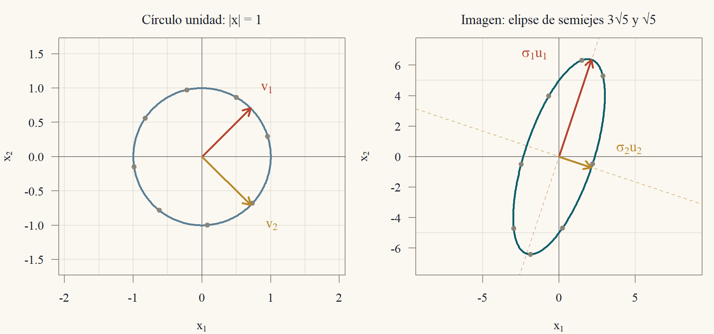
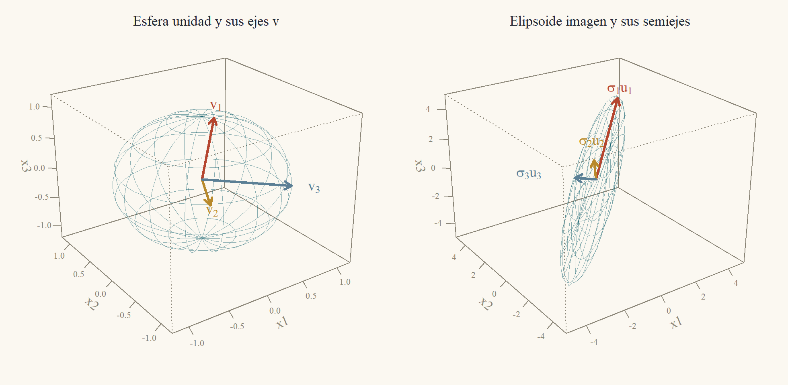
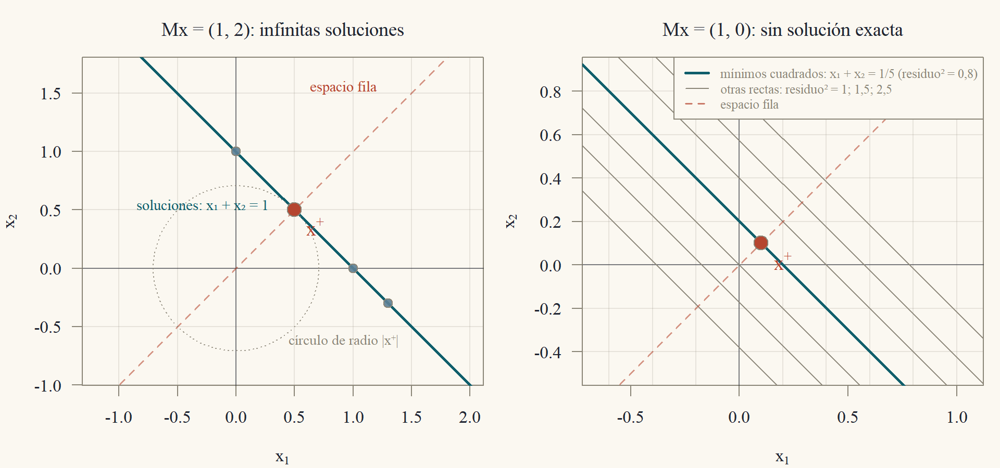
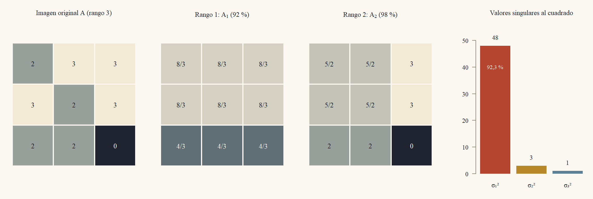
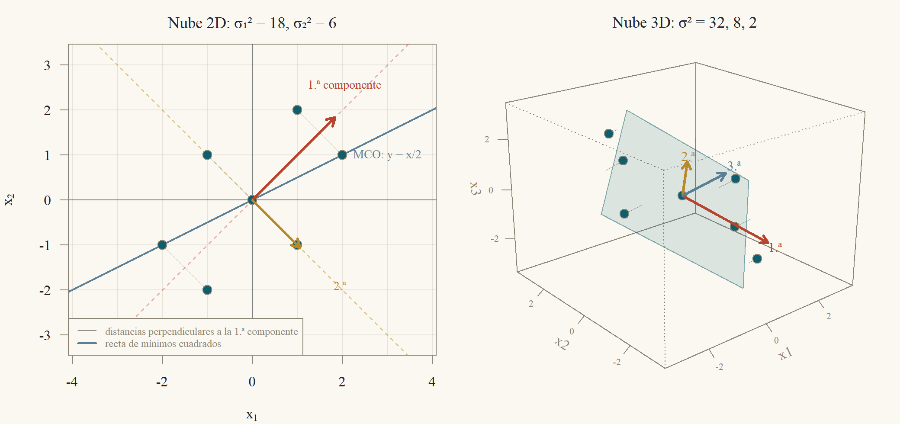

Clase 9 · Descomposición en valores singulares
Toda matriz es una rotación, un estiramiento y otra rotación
1 Un círculo que se vuelve elipse
Sea \(A = \begin{pmatrix}3&0\\4&5\end{pmatrix}\). Esta matriz no es simétrica y sus vectores propios no son perpendiculares, así que el teorema espectral de la Clase 8 no se le aplica. Pero siempre podemos mirar qué hace con el círculo unidad. Un vector unitario \(x = (\cos t,\sin t)'\) va a \(Ax = (3\cos t,\ 4\cos t + 5\sin t)'\), y al recorrer todo el círculo la imagen es la elipse inclinada de la Figura 1.
¿Hay un par de direcciones perpendiculares del círculo que \(A\) lleve a las direcciones de los ejes de la elipse? Probemos con las diagonales \(v_1 = \tfrac1{\sqrt2}(1,1)'\) y \(v_2 = \tfrac1{\sqrt2}(1,-1)'\): \[ Av_1 = \frac1{\sqrt2}\begin{pmatrix}3\\9\end{pmatrix},\qquad Av_2 = \frac1{\sqrt2}\begin{pmatrix}3\\-1\end{pmatrix}. \] Los dos vectores resultantes son perpendiculares: \(3\cdot3 + 9\cdot(-1) = 0\). Sus largos son \(\|Av_1\| = \sqrt{90/2} = \sqrt{45} = 3\sqrt5\) y \(\|Av_2\| = \sqrt{10/2} = \sqrt5\). Entonces \(A\) manda el par perpendicular \(v_1,v_2\) al par perpendicular \(3\sqrt5\,u_1,\ \sqrt5\,u_2\), con \(u_1 = \tfrac1{\sqrt{10}}(1,3)'\) y \(u_2 = \tfrac1{\sqrt{10}}(3,-1)'\) unitarios: son los ejes de la elipse, de semiejes \(3\sqrt5\approx6{,}71\) y \(\sqrt5\approx2{,}24\).

Esta es la idea de la clase: toda matriz real \(m\times n\) lleva una base ortonormal \(v_1,\dots,v_n\) de \(\mathbb{R}^n\) a un conjunto de vectores perpendiculares \(\sigma_1u_1,\dots,\sigma_nu_n\) de \(\mathbb{R}^m\). Con ello \(A\) queda descrita por dos rotaciones (o reflexiones) y un estiramiento: \(A = U\Sigma V'\). Esa factorización contiene el rango, los cuatro subespacios, la pseudoinversa, la mejor aproximación de rango bajo y las componentes principales de una nube de datos.
2 La descomposición en valores singulares
Para una matriz \(A\) de \(m\times n\) el producto \(A'A\) es simétrico, semidefinido positivo (Clase 8: la forma cuadrática de \(A'A\) es \(\|Ax\|^2\ge0\)) y de tamaño \(n\times n\). Su teorema espectral es el motor de toda la clase. Primero, un hecho sobre su rango.
Lema 1 (\(A'A\) y \(A\) tienen el mismo espacio nulo) Para toda matriz \(A\) de \(m\times n\), \(N(A'A) = N(A)\), y por lo tanto \(\operatorname{rango}(A'A) = \operatorname{rango}A\).
Si \(Ax = 0\) entonces \(A'Ax = 0\). Al revés, si \(A'Ax = 0\), multiplico por \(x'\) para obtener \(\|Ax\|^2 = 0\). Con igual espacio nulo, la fórmula rango más nulidad da igual rango.
Demostración. Si \(Ax = 0\), entonces \(A'Ax = A'0 = 0\). Recíprocamente, si \(A'Ax = 0\), entonces \(0 = x'A'Ax = (Ax)'(Ax) = \|Ax\|^2\), de donde \(Ax = 0\). Las dos matrices tienen \(n\) columnas y el mismo espacio nulo, y por la fórmula rango + nulidad \(= n\) (Clase 3) tienen el mismo rango.
Teorema 1 (Descomposición en valores singulares (SVD)) Sea \(A\) una matriz real de \(m\times n\) y de rango \(r\). Existen una matriz ortogonal \(U\) de \(m\times m\), una matriz ortogonal \(V\) de \(n\times n\) y números \(\sigma_1\ge\sigma_2\ge\dots\ge\sigma_r>0\) tales que \[ A = U\Sigma V',\qquad \Sigma = \begin{pmatrix}\operatorname{diag}(\sigma_1,\dots,\sigma_r)&0\\0&0\end{pmatrix}\ \ (m\times n). \] Los \(\sigma_i\) se llaman valores singulares de \(A\) (se escribe \(\sigma_i = 0\) para \(r<i\le\min(m,n)\)), las columnas \(u_i\) de \(U\) son los vectores singulares izquierdos y las columnas \(v_i\) de \(V\), los vectores singulares derechos. Además \(Av_i = \sigma_iu_i\) para \(i\le r\), \(Av_i = 0\) para \(i>r\), y \[ A = \sigma_1u_1v_1' + \sigma_2u_2v_2' + \dots + \sigma_ru_rv_r'. \]
Diagonalizo \(A'A = V\Lambda V'\) con el teorema espectral. Los \(\sigma_i\) son las raíces de los valores propios, y los \(v_i\), sus vectores propios. Defino \(u_i = Av_i/\sigma_i\): son unitarios y perpendiculares porque \(v_i'A'Av_j = \lambda_jv_i'v_j\). Los completo a una base ortonormal de \(\mathbb{R}^m\). Con eso \(AV = U\Sigma\) columna por columna.
Demostración. Los \(v_i\) y los \(\sigma_i\). Por el teorema espectral (Clase 8), \(A'A = V\Lambda V'\) con \(V\) ortogonal y \(\Lambda = \operatorname{diag}(\lambda_1,\dots,\lambda_n)\), y ordenamos las columnas de \(V\) para que \(\lambda_1\ge\dots\ge\lambda_n\). Como \(A'A\) es semidefinida positiva, todos los \(\lambda_i\ge0\); en concreto, \(\lambda_i = v_i'A'Av_i = \|Av_i\|^2\). El número de \(\lambda_i\) no nulos es el rango de \(A'A\) (Clase 8, corolario del teorema espectral), que por el Lema 1 es \(r\). Luego \(\lambda_1\ge\dots\ge\lambda_r>0 = \lambda_{r+1} = \dots = \lambda_n\). Definimos \(\sigma_i = \sqrt{\lambda_i}\) para \(i\le r\).
Los \(v_i\) con \(i>r\). Para \(i>r\), \(\|Av_i\|^2 = \lambda_i = 0\), así que \(Av_i = 0\).
Los \(u_i\) con \(i\le r\). Para \(i\le r\) sea \(u_i = Av_i/\sigma_i\in\mathbb{R}^m\). Su largo es \(\|u_i\| = \|Av_i\|/\sigma_i = \sqrt{\lambda_i}/\sigma_i = 1\). Para \(i\ne j\) (ambos \(\le r\)), usando \(A'Av_j = \lambda_jv_j\) y \(v_i'v_j = 0\), \[ u_i\cdot u_j = \frac{(Av_i)'(Av_j)}{\sigma_i\sigma_j} = \frac{v_i'(A'Av_j)}{\sigma_i\sigma_j} = \frac{\lambda_j\,v_i'v_j}{\sigma_i\sigma_j} = 0. \] Así \(u_1,\dots,u_r\) son ortonormales. Por Gram–Schmidt (Clase 5) se completan con \(u_{r+1},\dots,u_m\) a una base ortonormal de \(\mathbb{R}^m\), y \(U = (u_1\ \cdots\ u_m)\) es ortogonal.
La igualdad. La columna \(i\) de \(U\Sigma\) es \(\sigma_iu_i = Av_i\) si \(i\le r\) y es \(0 = Av_i\) si \(i>r\). Es decir, \(U\Sigma = AV\). Multiplicando por \(V'\) a la derecha y usando \(VV' = I\), queda \(A = U\Sigma V'\). La suma de matrices de rango uno sale de la multiplicación columna por fila: \(U\Sigma V' = \sum_{i\le r}\sigma_iu_iv_i'\), porque las columnas de \(U\Sigma\) con \(i>r\) son nulas.
El teorema da más información de la que aparenta.
Corolario 1 (Consecuencias inmediatas)
- Los \(\sigma_i^2\) son los valores propios de \(A'A\) (con vectores propios \(v_i\)) y los \(r\) valores propios no nulos de \(AA'\) (con vectores propios \(u_i\)). Además \(A'u_i = \sigma_iv_i\) para \(i\le r\).
- Los valores singulares están determinados por \(A\): cualquier factorización \(A = U\Sigma V'\) con \(U,V\) ortogonales y \(\Sigma\) como en el teorema tiene los mismos \(\sigma_i\).
- Si \(A\) es simétrica semidefinida positiva, la SVD es el teorema espectral: \(\sigma_i = \lambda_i\) y \(u_i = v_i\).
Todo sale de \(A'A = V\Sigma'\Sigma V'\) y de la fórmula \(Av_i = \sigma_iu_i\). Para \(AA'\) se escribe el mismo producto en el otro orden.
Demostración.
Ya vimos que \(A'Av_i = \lambda_iv_i = \sigma_i^2v_i\). Para \(i\le r\), \(A'u_i = A'Av_i/\sigma_i = \sigma_i^2v_i/\sigma_i = \sigma_iv_i\), y entonces \(AA'u_i = \sigma_iAv_i = \sigma_i^2u_i\). Esos son \(r\) valores propios no nulos de \(AA'\); no hay más, porque \(\operatorname{rango}(AA') = \operatorname{rango}(A') = r\) (Lema 1 aplicado a \(A'\)) y el rango de una simétrica es el número de valores propios no nulos.
Si \(A = U\Sigma V'\), entonces \(A'A = V\Sigma'U'U\Sigma V' = V(\Sigma'\Sigma)V'\), con \(\Sigma'\Sigma\) diagonal de entradas \(\sigma_i^2\). Es una diagonalización de \(A'A\), así que los \(\sigma_i^2\) son sus valores propios y quedan determinados.
Si \(A = Q\Lambda Q'\) con \(\lambda_i\ge0\) ordenados de mayor a menor, esa ya es una SVD con \(U = V = Q\).
Los \(\sigma_i\) están determinados, pero los vectores no siempre: si dos valores singulares coinciden, hay libertad para elegir los vectores correspondientes (el Ejercicio 9.2 lo muestra), y en cualquier caso se puede cambiar el signo de \(u_i\) y \(v_i\) a la vez.
Entrada: \(A\) de \(m\times n\). Salida: \(U,\Sigma,V\) con \(A = U\Sigma V'\).
- Calcular \(G = A'A\) (matriz \(n\times n\) simétrica).
- Hallar los valores propios \(\lambda_1\ge\dots\ge\lambda_n\ge0\) de \(G\) y vectores propios unitarios y perpendiculares \(v_i\) (Clase 8). Los \(\sigma_i = \sqrt{\lambda_i}\); \(r\) es el número de \(\sigma_i>0\).
- Para \(i = 1,\dots,r\): \(u_i = Av_i/\sigma_i\).
- Completar \(u_1,\dots,u_r\) a una base ortonormal de \(\mathbb{R}^m\) con una base ortonormal del espacio nulo de \(A'\) (Gram–Schmidt).
- Comprobar \(Av_i = \sigma_iu_i\) para todo \(i\le r\).
Costo: a mano, solo para matrices chicas. En la práctica no se forma \(A'A\): se reduce \(A\) a forma bidiagonal con reflexiones de Householder (Clase 5) y se itera sobre esa matriz; el costo es del orden de \(mn^2\) para \(m\ge n\), con una constante mayor que la de QR. Cuándo falla: formar \(A'A\) eleva al cuadrado el número de condición (Clase 6) y los valores singulares pequeños pierden precisión: el error absoluto de un \(\sigma_i\) calculado así es del orden de \(\varepsilon\,\sigma_1^2/\sigma_i\), con \(\varepsilon\) la precisión de máquina. Por eso los programas no usan este camino.
Ejemplo 1 (SVD de una matriz \(2\times2\)) Para \(A = \begin{pmatrix}3&0\\4&5\end{pmatrix}\): \(A'A = \begin{pmatrix}3&4\\0&5\end{pmatrix}\begin{pmatrix}3&0\\4&5\end{pmatrix} = \begin{pmatrix}25&20\\20&25\end{pmatrix}\), con \(\tau = 50\) y \(\Delta = 625 - 400 = 225\), es decir \(\lambda^2 - 50\lambda + 225 = (\lambda - 45)(\lambda - 5)\). Los valores singulares son \(\sigma_1 = \sqrt{45} = 3\sqrt5\) y \(\sigma_2 = \sqrt5\). Los vectores propios de \(A'A\): para \(\lambda = 45\), \(A'A - 45I = \begin{pmatrix}-20&20\\20&-20\end{pmatrix}\) da \(x_1 = x_2\), \(v_1 = \tfrac1{\sqrt2}(1,1)'\); para \(\lambda = 5\), \(x_1 = -x_2\), \(v_2 = \tfrac1{\sqrt2}(1,-1)'\). Los vectores izquierdos, como en la apertura: \[ \begin{aligned} u_1 &= \frac{Av_1}{\sigma_1} = \frac{(3,9)'}{\sqrt2\cdot3\sqrt5} = \frac1{\sqrt{10}}\begin{pmatrix}1\\3\end{pmatrix},\\ u_2 &= \frac{Av_2}{\sigma_2} = \frac{(3,-1)'}{\sqrt2\cdot\sqrt5} = \frac1{\sqrt{10}}\begin{pmatrix}3\\-1\end{pmatrix}. \end{aligned} \] Entonces \(A = U\Sigma V'\) con \(U = \tfrac1{\sqrt{10}}\begin{pmatrix}1&3\\3&-1\end{pmatrix}\), \(\Sigma = \operatorname{diag}(3\sqrt5,\sqrt5)\) y \(V = \tfrac1{\sqrt2}\begin{pmatrix}1&1\\1&-1\end{pmatrix}\). Comprobación con la suma de matrices de rango uno: \(\sigma_1u_1v_1' = \tfrac{3\sqrt5}{\sqrt{20}}\begin{pmatrix}1\\3\end{pmatrix}\begin{pmatrix}1&1\end{pmatrix} = \tfrac32\begin{pmatrix}1&1\\3&3\end{pmatrix}\) y \(\sigma_2u_2v_2' = \tfrac{\sqrt5}{\sqrt{20}}\begin{pmatrix}3\\-1\end{pmatrix}\begin{pmatrix}1&-1\end{pmatrix} = \tfrac12\begin{pmatrix}3&-3\\-1&1\end{pmatrix}\), y \[ \tfrac32\begin{pmatrix}1&1\\3&3\end{pmatrix} + \tfrac12\begin{pmatrix}3&-3\\-1&1\end{pmatrix} = \begin{pmatrix}\tfrac32 + \tfrac32&\tfrac32 - \tfrac32\\\tfrac92 - \tfrac12&\tfrac92 + \tfrac12\end{pmatrix} = \begin{pmatrix}3&0\\4&5\end{pmatrix}\ \text{✓} \]
Ejemplo 2 (SVD de una matriz \(3\times3\)) Sea \(A = \begin{pmatrix}2&3&3\\3&2&3\\2&2&0\end{pmatrix}\) (la usaremos otra vez como imagen). Sus columnas son \((2,3,2)'\), \((3,2,2)'\) y \((3,3,0)'\), y \[ A'A = \begin{pmatrix}4 + 9 + 4&6 + 6 + 4&6 + 9 + 0\\16&9 + 4 + 4&9 + 6 + 0\\15&15&9 + 9 + 0\end{pmatrix} = \begin{pmatrix}17&16&15\\16&17&15\\15&15&18\end{pmatrix}. \] Probemos los vectores \(w_1 = (1,1,1)'\), \(w_2 = (1,1,-2)'\) y \(w_3 = (1,-1,0)'\) (perpendiculares entre sí: \(1 + 1 - 2 = 0\), \(1 - 1 = 0\), \(1 - 1 + 0 = 0\)): \[ \begin{aligned} A'Aw_1 &= \begin{pmatrix}48\\48\\48\end{pmatrix} = 48\,w_1,\\ A'Aw_2 &= \begin{pmatrix}17 + 16 - 30\\16 + 17 - 30\\15 + 15 - 36\end{pmatrix} = \begin{pmatrix}3\\3\\-6\end{pmatrix} = 3\,w_2,\\ A'Aw_3 &= \begin{pmatrix}1\\-1\\0\end{pmatrix} = 1\,w_3. \end{aligned} \] Los valores propios son \(48,3,1\) (suman \(52 = 17 + 17 + 18 = \operatorname{tr}(A'A)\)), de modo que \(\sigma_1 = \sqrt{48} = 4\sqrt3\), \(\sigma_2 = \sqrt3\), \(\sigma_3 = 1\), y los vectores unitarios son \(v_1 = \tfrac1{\sqrt3}(1,1,1)'\), \(v_2 = \tfrac1{\sqrt6}(1,1,-2)'\), \(v_3 = \tfrac1{\sqrt2}(1,-1,0)'\). Aplicamos \(A\): \[ \begin{aligned} Av_1 &= \frac1{\sqrt3}\begin{pmatrix}8\\8\\4\end{pmatrix},\\ Av_2 &= \frac1{\sqrt6}\begin{pmatrix}2 + 3 - 6\\3 + 2 - 6\\2 + 2 - 0\end{pmatrix} = \frac1{\sqrt6}\begin{pmatrix}-1\\-1\\4\end{pmatrix},\\ Av_3 &= \frac1{\sqrt2}\begin{pmatrix}2 - 3\\3 - 2\\2 - 2\end{pmatrix} = \frac1{\sqrt2}\begin{pmatrix}-1\\1\\0\end{pmatrix}. \end{aligned} \] Sus largos son \(\tfrac{\sqrt{144}}{\sqrt3} = 4\sqrt3\), \(\tfrac{\sqrt{18}}{\sqrt6} = \sqrt3\) y \(1\), como debe ser. Dividiendo por \(\sigma_i\): \[ \begin{aligned} u_1 &= \frac13\begin{pmatrix}2\\2\\1\end{pmatrix},\qquad u_2 = \frac1{3\sqrt2}\begin{pmatrix}-1\\-1\\4\end{pmatrix},\\ u_3 &= \frac1{\sqrt2}\begin{pmatrix}-1\\1\\0\end{pmatrix}. \end{aligned} \] Son perpendiculares: \(u_1\cdot u_2\propto-2 - 2 + 4 = 0\), \(u_1\cdot u_3\propto-2 + 2 = 0\), \(u_2\cdot u_3\propto1 - 1 = 0\). La suma de matrices de rango uno: \[ \begin{aligned} \sigma_1u_1v_1' &= \tfrac43\begin{pmatrix}2&2&2\\2&2&2\\1&1&1\end{pmatrix},\\ \sigma_2u_2v_2' &= \tfrac16\begin{pmatrix}-1&-1&2\\-1&-1&2\\4&4&-8\end{pmatrix},\qquad \sigma_3u_3v_3' = \tfrac12\begin{pmatrix}-1&1&0\\1&-1&0\\0&0&0\end{pmatrix}. \end{aligned} \] (Por ejemplo, \(\sigma_2u_2v_2' = \tfrac{\sqrt3}{3\sqrt2\sqrt6}(-1,-1,4)'(1,1,-2) = \tfrac16(-1,-1,4)'(1,1,-2)\).) La entrada \((1,1)\) de la suma es \(\tfrac83 - \tfrac16 - \tfrac12 = \tfrac{16 - 1 - 3}6 = 2\); la \((1,2)\), \(\tfrac83 - \tfrac16 + \tfrac12 = 3\); la \((1,3)\), \(\tfrac83 + \tfrac13 = 3\); la \((3,1)\), \(\tfrac43 + \tfrac46 = 2\); la \((3,3)\), \(\tfrac43 - \tfrac86 = 0\). Las demás se calculan igual y se recupera \(A\) completa ✓. Como control, \(\det A = 2(0 - 6) - 3(0 - 6) + 3(6 - 4) = 12 = 4\sqrt3\cdot\sqrt3\cdot1 = \sigma_1\sigma_2\sigma_3\).
3 La geometría: la esfera se vuelve un elipsoide
La apertura mostró un círculo que se vuelve elipse. En general, la SVD dice que \(A\) hace tres cosas seguidas: \(V'\) gira (o refleja) a las coordenadas de los \(v_i\); \(\Sigma\) estira cada coordenada \(i\) por \(\sigma_i\) (y aplasta a cero las coordenadas \(i>r\)), y \(U\) gira (o refleja) el resultado al espacio de llegada.
Teorema 2 (La imagen de la bola unidad) Sea \(A = U\Sigma V'\) de rango \(r\). La imagen de la bola unidad \(\{x:\|x\|\le1\}\) es \[ \Bigl\{z_1u_1 + \dots + z_ru_r\ :\ \tfrac{z_1^2}{\sigma_1^2} + \dots + \tfrac{z_r^2}{\sigma_r^2}\le1\Bigr\}, \] un elipsoide sólido de dimensión \(r\) dentro del espacio columna, con semiejes \(\sigma_iu_i\). Si \(r = n\), la imagen de la esfera \(\|x\| = 1\) es su superficie, \(\sum z_i^2/\sigma_i^2 = 1\).
Cambio de variable \(y = V'x\) (no cambia el largo). En esas coordenadas, \(Ax = \sum_{i\le r}\sigma_iy_iu_i\). Pongo \(z_i = \sigma_iy_i\) y la condición \(\|y\|\le1\) pasa a ser la del elipsoide. Para la inclusión inversa construyo el \(x\) que corresponde a cada \(z\).
Demostración. Sea \(\|x\|\le1\) e \(y = V'x\), de modo que \(x = Vy\) y \(\|y\| = \|x\|\le1\) (Clase 8, \(V\) ortogonal). Entonces \(Ax = U\Sigma y = \sum_{i\le r}\sigma_iy_iu_i\), porque \(\Sigma y = (\sigma_1y_1,\dots,\sigma_ry_r,0,\dots,0)'\). Con \(z_i = \sigma_iy_i\), \(\sum_{i\le r}z_i^2/\sigma_i^2 = \sum_{i\le r}y_i^2\le\|y\|^2\le1\). Recíprocamente, dado \(z\) con \(\sum z_i^2/\sigma_i^2\le1\), sea \(y_i = z_i/\sigma_i\) para \(i\le r\) y \(y_i = 0\) para \(i>r\); entonces \(\|y\|\le1\), \(x = Vy\) cumple \(\|x\|\le1\) y \(Ax = \sum z_iu_i\). Para \(r = n\) no hay coordenadas \(i>r\), \(\|y\| = \|x\|\) y la igualdad \(\|x\| = 1\) equivale a \(\sum z_i^2/\sigma_i^2 = 1\).

Corolario 2 (Amplificación máxima y mínima, determinante y condicionamiento) Para todo \(x\in\mathbb{R}^n\), \[ \|Ax\|\le\sigma_1\|x\|, \] con igualdad en \(x = v_1\). Si \(r = n\) (columnas independientes), también \(\|Ax\|\ge\sigma_n\|x\|\), con igualdad en \(x = v_n\). Si \(A\) es cuadrada, \(|\det A| = \sigma_1\sigma_2\cdots\sigma_n\), y si además es invertible, el cociente \(\kappa(A) = \sigma_1/\sigma_n\) (el número de condición de la Clase 6) es la razón entre el semieje mayor y el menor del elipsoide imagen.
En las coordenadas \(y = V'x\) el cuadrado \(\|Ax\|^2\) es \(\sum\sigma_i^2y_i^2\), un promedio ponderado de los \(\sigma_i^2\) (por \(\|x\|^2\)), que no sale del intervalo entre el menor y el mayor. El determinante sale de que las matrices ortogonales tienen determinante \(\pm1\).
Demostración. Con \(y = V'x\), \(\|Ax\|^2 = \|U\Sigma y\|^2 = \|\Sigma y\|^2 = \sum_{i\le r}\sigma_i^2y_i^2\), porque \(U\) conserva largos. Como \(\sum_{i\le n}y_i^2 = \|x\|^2\), esto es \(\|x\|^2\) por un promedio ponderado de los \(\sigma_i^2\) (pesos \(y_i^2/\|x\|^2\ge0\) que suman \(1\), con \(\sigma_i = 0\) para \(i>r\)), así que está entre \(\sigma_n^2\|x\|^2\) y \(\sigma_1^2\|x\|^2\) (la misma idea que el cociente de Rayleigh, Clase 8). Para \(x = v_1\), \(y = e_1\) y el promedio vale \(\sigma_1^2\); para \(x = v_n\), vale \(\sigma_n^2\). Si \(A\) es cuadrada, \(|\det A| = |\det U|\,|\det\Sigma|\,|\det V'| = \sigma_1\cdots\sigma_n\), porque el determinante de una matriz ortogonal es \(\pm1\) (Clase 4).
El número \(\sigma_1 = \max_{\|x\| = 1}\|Ax\|\) se llama norma espectral de \(A\) y se escribe \(\|A\|_2\); la Clase 10 la estudia junto con las demás normas matriciales. En el Ejemplo 1, \(|\det A| = 15 = 3\sqrt5\cdot\sqrt5\) y \(\kappa(A) = 3\); en el Ejemplo 2, \(|\det A| = 12\) y \(\kappa(A) = 4\sqrt3\approx6{,}93\).
4 Rango y los cuatro subespacios
La SVD lee de un vistazo los cuatro subespacios de la Clase 3, y los entrega con bases ortonormales.
Proposición 1 (Bases ortonormales de los cuatro subespacios) Sea \(A = U\Sigma V'\) de rango \(r\). Entonces:
- \(u_1,\dots,u_r\) es una base ortonormal del espacio columna \(C(A)\).
- \(u_{r+1},\dots,u_m\) es una base ortonormal del espacio nulo izquierdo \(N(A')\).
- \(v_1,\dots,v_r\) es una base ortonormal del espacio fila \(C(A')\).
- \(v_{r+1},\dots,v_n\) es una base ortonormal del espacio nulo \(N(A)\).
Escribo \(Ax = \sum\sigma_i(v_i\cdot x)u_i\): eso dice que el espacio columna está generado por \(u_1,\dots,u_r\), y que \(Ax = 0\) exactamente cuando \(x\) es perpendicular a \(v_1,\dots,v_r\). Los otros dos subespacios salen de aplicar lo mismo a \(A' = V\Sigma'U'\).
Demostración. Espacio columna. Para todo \(x\), \(Ax = \sum_{i\le r}\sigma_i(v_i'x)\,u_i\in\operatorname{gen}(u_1,\dots,u_r)\). Recíprocamente, \(u_i = A(v_i/\sigma_i)\in C(A)\) para \(i\le r\). Los \(u_i\) son ortonormales, por lo tanto independientes: forman una base de \(C(A)\), de dimensión \(r\).
Espacio nulo. Como \(\{v_1,\dots,v_n\}\) es una base ortonormal, \(x = \sum_i(v_i'x)v_i\), y \(Ax = \sum_{i\le r}\sigma_i(v_i'x)u_i\). Los \(u_i\) son independientes y \(\sigma_i>0\), así que \(Ax = 0\) si y solo si \(v_i'x = 0\) para \(i = 1,\dots,r\), es decir, si y solo si \(x = \sum_{i>r}(v_i'x)v_i\in\operatorname{gen}(v_{r+1},\dots,v_n)\). Esos \(n - r\) vectores son ortonormales y forman una base de \(N(A)\).
Los otros dos. \(A' = V\Sigma'U'\) es una SVD de \(A'\) con los papeles de \(U\) y \(V\) intercambiados y el mismo rango \(r\). Aplicando lo ya demostrado a \(A'\): \(C(A') = \operatorname{gen}(v_1,\dots,v_r)\) y \(N(A') = \operatorname{gen}(u_{r+1},\dots,u_m)\).
Las dos bases \(\{u_1,\dots,u_r\}\) y \(\{u_{r+1},\dots,u_m\}\) son perpendiculares por ser parte de una misma base ortonormal: \(C(A)\perp N(A')\) y \(C(A')\perp N(A)\), que es la ortogonalidad de la Clase 3 con su demostración incluida.
Ejemplo 3 (Una matriz \(2\times2\) de rango 1) Sea \(M = \begin{pmatrix}1&1\\2&2\end{pmatrix} = \begin{pmatrix}1\\2\end{pmatrix}\begin{pmatrix}1&1\end{pmatrix}\). Entonces \(M'M = \begin{pmatrix}5&5\\5&5\end{pmatrix}\) tiene valores propios \(10\) y \(0\), con vectores propios \(v_1 = \tfrac1{\sqrt2}(1,1)'\) y \(v_2 = \tfrac1{\sqrt2}(1,-1)'\). Luego \(\sigma_1 = \sqrt{10}\) y \(u_1 = Mv_1/\sigma_1 = \tfrac{(2,4)'}{\sqrt2\sqrt{10}} = \tfrac1{\sqrt5}(1,2)'\). El vector \(u_2\) se completa perpendicular a \(u_1\): \(u_2 = \tfrac1{\sqrt5}(2,-1)'\). Entonces \(M = \sqrt{10}\,u_1v_1'\) (comprobación: \(\tfrac{\sqrt{10}}{\sqrt{10}}(1,2)'(1,1) = M\)), y: \(C(M) = \operatorname{gen}(1,2)\), \(N(M') = \operatorname{gen}(2,-1)\), \(C(M') = \operatorname{gen}(1,1)\) y \(N(M) = \operatorname{gen}(1,-1)\).
Ejemplo 4 (Una matriz \(3\times3\) de rango 2) Sea \(B = \begin{pmatrix}1&0&-1\\1&0&-1\\-1&-1&-1\end{pmatrix}\) (las dos primeras filas son iguales, \(\operatorname{rango}B = 2\)). Entonces \(B'B = \begin{pmatrix}3&1&-1\\1&1&1\\-1&1&3\end{pmatrix}\) (las columnas de \(B\) son \((1,1,-1)'\), \((0,0,-1)'\) y \((-1,-1,-1)'\)). Se verifica que \[ \begin{aligned} B'B\begin{pmatrix}1\\0\\-1\end{pmatrix} &= \begin{pmatrix}4\\0\\-4\end{pmatrix},\qquad B'B\begin{pmatrix}1\\1\\1\end{pmatrix} = \begin{pmatrix}3\\3\\3\end{pmatrix},\\ B\begin{pmatrix}1\\-2\\1\end{pmatrix} &= \begin{pmatrix}1 - 1\\1 - 1\\-1 + 2 - 1\end{pmatrix} = \begin{pmatrix}0\\0\\0\end{pmatrix}, \end{aligned} \] así que los valores propios de \(B'B\) son \(4\), \(3\) y \(0\), y \(\sigma_1 = 2\), \(\sigma_2 = \sqrt3\) y \(\sigma_3 = 0\), con \[ v_1 = \tfrac1{\sqrt2}\begin{pmatrix}1\\0\\-1\end{pmatrix},\quad v_2 = \tfrac1{\sqrt3}\begin{pmatrix}1\\1\\1\end{pmatrix},\quad v_3 = \tfrac1{\sqrt6}\begin{pmatrix}1\\-2\\1\end{pmatrix}. \] Los vectores izquierdos: \(Bv_1 = \tfrac1{\sqrt2}(2,2,0)'\), luego \(u_1 = Bv_1/2 = \tfrac1{\sqrt2}(1,1,0)'\). Y \(Bv_2 = \tfrac1{\sqrt3}(0,0,-3)'\), luego \(u_2 = Bv_2/\sqrt3 = (0,0,-1)'\). El tercero se completa perpendicular a los dos: \(u_3 = \tfrac1{\sqrt2}(1,-1,0)'\). Entonces \(B = 2u_1v_1' + \sqrt3\,u_2v_2'\): \[ \begin{aligned} &2\cdot\frac12\begin{pmatrix}1\\1\\0\end{pmatrix}\begin{pmatrix}1&0&-1\end{pmatrix} + \sqrt3\cdot\frac1{\sqrt3}\begin{pmatrix}0\\0\\-1\end{pmatrix}\begin{pmatrix}1&1&1\end{pmatrix}\\ &\qquad= \begin{pmatrix}1&0&-1\\1&0&-1\\0&0&0\end{pmatrix} + \begin{pmatrix}0&0&0\\0&0&0\\-1&-1&-1\end{pmatrix} = B\ \text{✓} \end{aligned} \] Los subespacios: \(C(B) = \operatorname{gen}\{(1,1,0)',(0,0,1)'\}\); \(N(B') = \operatorname{gen}\{(1,-1,0)'\}\) (en efecto, \(B'(1,-1,0)' = (0,0,0)'\)); \(C(B') = \operatorname{gen}\{(1,0,-1)',(1,1,1)'\}\) (las filas de \(B\) son \((1,0,-1)\) y \((-1,-1,-1)\), que generan lo mismo) y \(N(B) = \operatorname{gen}\{(1,-2,1)'\}\).
5 La pseudoinversa y la solución de norma mínima
Una matriz que no es cuadrada, o que es singular, no tiene inversa. Pero la SVD permite invertir lo que se puede invertir: lleva \(u_i\) de vuelta a \(v_i\) dividiendo por \(\sigma_i\), y manda a cero lo demás.
Definición 1 (Pseudoinversa) Si \(A = U\Sigma V'\) tiene rango \(r\), su pseudoinversa (de Moore–Penrose) es la matriz \(A^+\) de \(n\times m\), \[ A^+ = V\Sigma^+U' = \sum_{i=1}^r\frac1{\sigma_i}v_iu_i',\qquad \Sigma^+ = \begin{pmatrix}\operatorname{diag}(1/\sigma_1,\dots,1/\sigma_r)&0\\0&0\end{pmatrix}\ \ (n\times m). \]
Si \(A\) es cuadrada e invertible, \(A^+ = V\Sigma^{-1}U' = A^{-1}\) (porque \(A\cdot V\Sigma^{-1}U' = U\Sigma V'V\Sigma^{-1}U' = I\)). Si \(A\) no es invertible, \(A^+\) hace lo mejor posible, en un sentido preciso.1
1 La pseudoinversa fue definida por E. H. Moore en 1920 y redescubierta por Roger Penrose en 1955, quien la caracterizó con cuatro ecuaciones.
Teorema 3 (La pseudoinversa resuelve mínimos cuadrados con norma mínima) Para \(A\) de \(m\times n\) y \(b\in\mathbb{R}^m\), el vector \(x^+ = A^+b\) es el de menor norma entre todos los vectores que minimizan \(\|Ax - b\|\). Es el único minimizador que está en el espacio fila \(C(A')\).
Paso a las coordenadas \(y = V'x\) y \(c = U'b\). El residuo \(\|Ax - b\|^2\) se separa en una suma de cuadrados \((\sigma_iy_i - c_i)^2\) para \(i\le r\) más un término \(\sum_{i>r}c_i^2\) que no depende de \(x\). Se minimiza anulando los primeros, y la norma \(\|x\|^2 = \|y\|^2\) se minimiza haciendo \(y_i = 0\) para \(i>r\).
Demostración. Sea \(y = V'x\) y \(c = U'b\). Como \(U\) conserva largos, \(\|Ax - b\| = \|U(\Sigma y - c)\| = \|\Sigma y - c\|\) (pues \(Ax = U\Sigma y\) y \(b = Uc\)), y \[ \|Ax - b\|^2 = \sum_{i=1}^r(\sigma_iy_i - c_i)^2 + \sum_{i=r+1}^mc_i^2. \] El segundo término no depende de \(x\). El primero es \(\ge0\) y vale \(0\) exactamente cuando \(y_i = c_i/\sigma_i\) para \(i = 1,\dots,r\), sin restricción sobre \(y_{r+1},\dots,y_n\). Esos son los minimizadores. Entre ellos, \(\|x\|^2 = \|y\|^2 = \sum_{i\le r}c_i^2/\sigma_i^2 + \sum_{i>r}y_i^2\) es mínima si y solo si \(y_i = 0\) para \(i>r\). Ese minimizador es \(y = \Sigma^+c\), es decir, \(x = Vy = V\Sigma^+U'b = A^+b\). Por último, \(x = Vy\in\operatorname{gen}(v_1,\dots,v_r) = C(A')\) si y solo si \(y_i = 0\) para \(i>r\) (Proposición 1), lo que caracteriza a \(x^+\).
Un caso importante: si \(r = n\) (columnas independientes), no hay coordenadas libres y \(x^+\) es el único minimizador; la pseudoinversa es entonces la de los mínimos cuadrados de la Clase 6.
Proposición 2 (Propiedades de \(A^+\))
- \(AA^+ = \sum_{i\le r}u_iu_i'\) es la matriz de proyección sobre \(C(A)\) y \(A^+A = \sum_{i\le r}v_iv_i'\) es la matriz de proyección sobre \(C(A')\).
- Si \(r = n\), entonces \(A^+ = (A'A)^{-1}A'\).
Al multiplicar \(A\) por \(A^+\) se cancela \(V'V = I\) y queda \(U(\Sigma\Sigma^+)U'\) con \(\Sigma\Sigma^+\) casi la identidad. Para la fórmula con \((A'A)^{-1}\) escribo \(A'A\) con la SVD y simplifico.
Demostración.
\(AA^+ = U\Sigma V'V\Sigma^+U' = U(\Sigma\Sigma^+)U'\), y \(\Sigma\Sigma^+\) es la matriz diagonal \(m\times m\) con \(1\) en las primeras \(r\) posiciones y \(0\) en el resto. Entonces \(AA^+ = \sum_{i\le r}u_iu_i'\), que por la Clase 6 es la proyección sobre la recta o el plano generado por los \(u_i\) ortonormales, es decir, sobre \(C(A)\) (Proposición 1). Igual para \(A^+A = V(\Sigma^+\Sigma)V'\).
Si \(r = n\), \(A'A = V\Sigma'\Sigma V'\) con \(\Sigma'\Sigma = \operatorname{diag}(\sigma_1^2,\dots,\sigma_n^2)\) invertible, y \((A'A)^{-1}A' = V(\Sigma'\Sigma)^{-1}V'V\Sigma'U' = V\bigl[(\Sigma'\Sigma)^{-1}\Sigma'\bigr]U'\). La matriz entre corchetes es \(\operatorname{diag}(1/\sigma_1,\dots,1/\sigma_n)\) completada con ceros, es decir, \(\Sigma^+\).
Ejemplo 5 (Pseudoinversa \(2\times2\) de rango 1) Para \(M = \begin{pmatrix}1&1\\2&2\end{pmatrix}\) (\(\sigma_1 = \sqrt{10}\), \(u_1 = \tfrac1{\sqrt5}(1,2)'\), \(v_1 = \tfrac1{\sqrt2}(1,1)'\)): \[ M^+ = \frac1{\sigma_1}v_1u_1' = \frac1{\sqrt{10}\sqrt2\sqrt5}\begin{pmatrix}1\\1\end{pmatrix}\begin{pmatrix}1&2\end{pmatrix} = \frac1{10}\begin{pmatrix}1&2\\1&2\end{pmatrix}. \] Resolvamos \(Mx = b\) para dos lados derechos (Figura 3). Con \(b = (1,2)'\in C(M)\): el sistema \(x_1 + x_2 = 1\) tiene infinitas soluciones \((1 - s,\ s)'\), y la de norma mínima es \(x^+ = M^+b = \tfrac1{10}(1 + 4,\ 1 + 4)' = (\tfrac12,\tfrac12)'\), con \(\|x^+\|^2 = \tfrac12\) (cualquier otra, \(\|(1 - s,s)\|^2 = 1 - 2s + 2s^2\ge\tfrac12\), con igualdad en \(s = \tfrac12\)). Con \(b = (1,0)'\notin C(M)\) no hay solución exacta; el residuo es \((x_1 + x_2 - 1)^2 + 4(x_1 + x_2)^2 = 5t^2 - 2t + 1\) con \(t = x_1 + x_2\), mínimo en \(t = \tfrac15\), y entre las infinitas soluciones de \(x_1 + x_2 = \tfrac15\) la de norma mínima es \(x^+ = M^+b = \tfrac1{10}(1,1)' = (\tfrac1{10},\tfrac1{10})'\), con residuo \(\tfrac45\).

Ejemplo 6 (Matrices \(3\times2\) y \(2\times3\) (columnas o filas independientes)) Sea \(T = \begin{pmatrix}1&0\\1&1\\0&1\end{pmatrix}\). Entonces \(T'T = \begin{pmatrix}2&1\\1&2\end{pmatrix}\) tiene valores propios \(3\) y \(1\) (Clase 8) con vectores propios \(v_1 = \tfrac1{\sqrt2}(1,1)'\) y \(v_2 = \tfrac1{\sqrt2}(1,-1)'\). Los valores singulares son \(\sigma_1 = \sqrt3\) y \(\sigma_2 = 1\), y \[ \begin{aligned} u_1 &= \frac{Tv_1}{\sqrt3} = \frac{(1,2,1)'}{\sqrt2\sqrt3} = \frac1{\sqrt6}\begin{pmatrix}1\\2\\1\end{pmatrix},\qquad u_2 = Tv_2 = \frac1{\sqrt2}\begin{pmatrix}1\\0\\-1\end{pmatrix},\\ u_3 &= \frac1{\sqrt3}\begin{pmatrix}1\\-1\\1\end{pmatrix}, \end{aligned} \] donde \(u_3\) completa la base (\(u_3\cdot u_1\propto1 - 2 + 1 = 0\), \(u_3\cdot u_2\propto1 - 1 = 0\)) y es una base de \(N(T')\). Como \(r = 2 = n\), por la Proposición 2, \[ T^+ = (T'T)^{-1}T' = \frac13\begin{pmatrix}2&-1\\-1&2\end{pmatrix}\begin{pmatrix}1&1&0\\0&1&1\end{pmatrix} = \frac13\begin{pmatrix}2&1&-1\\-1&1&2\end{pmatrix}. \] Con \(b = (1,2,0)'\): \(x^+ = T^+b = \tfrac13(2 + 2,\ -1 + 2)' = (\tfrac43,\tfrac13)'\), que cumple las ecuaciones normales: \(T'Tx^+ = (\tfrac83 + \tfrac13,\ \tfrac43 + \tfrac23)' = (3,2)' = T'b\) ✓.
La transpuesta \(T' = \begin{pmatrix}1&1&0\\0&1&1\end{pmatrix}\) (\(2\times3\)) tiene \((T')^+ = (T^+)' = \tfrac13\begin{pmatrix}2&-1\\1&1\\-1&2\end{pmatrix}\) (la SVD de \(T'\) es la de \(T\) con \(U\) y \(V\) intercambiados). Para \(T'x = (1,1)'\), esto es, \(x_1 + x_2 = 1\) y \(x_2 + x_3 = 1\), hay infinitas soluciones \((1 - s,\ s,\ 1 - s)'\) y la de norma mínima es \((T')^+(1,1)' = \tfrac13(2 - 1,\ 1 + 1,\ -1 + 2)' = \tfrac13(1,2,1)'\), con \(\|x^+\|^2 = \tfrac23\). Directamente: \(\|(1 - s,s,1 - s)\|^2 = 2(1 - s)^2 + s^2\) es mínimo cuando \(-4(1 - s) + 2s = 0\), es decir \(s = \tfrac23\), y da el mismo vector.
Ejemplo 7 (Pseudoinversa \(3\times3\) de rango 2) Para la matriz \(B\) del Ejemplo 4 (\(\sigma_1 = 2\), \(\sigma_2 = \sqrt3\)): \[ \begin{aligned} B^+ &= \frac12v_1u_1' + \frac1{\sqrt3}v_2u_2'\\ &= \frac14\begin{pmatrix}1\\0\\-1\end{pmatrix}\begin{pmatrix}1&1&0\end{pmatrix} + \frac13\begin{pmatrix}1\\1\\1\end{pmatrix}\begin{pmatrix}0&0&-1\end{pmatrix}\\ &= \begin{pmatrix}\tfrac14&\tfrac14&-\tfrac13\\0&0&-\tfrac13\\-\tfrac14&-\tfrac14&-\tfrac13\end{pmatrix}. \end{aligned} \] Comprobación de que \(BB^+\) es la proyección sobre \(C(B) = \operatorname{gen}\{(1,1,0)',(0,0,1)'\}\): la fila \((1,0,-1)\) de \(B\) por las columnas de \(B^+\) da \(\tfrac14 + \tfrac14 = \tfrac12\), \(\tfrac12\) y \(-\tfrac13 + \tfrac13 = 0\); la fila \((-1,-1,-1)\) da \(0\), \(0\) y \(\tfrac13 + \tfrac13 + \tfrac13 = 1\). Entonces \[ BB^+ = \begin{pmatrix}\tfrac12&\tfrac12&0\\\tfrac12&\tfrac12&0\\0&0&1\end{pmatrix}\ \text{✓} \] El sistema \(Bx = b\) con \(b = (1,1,-3)' = (1,1,0)' - 3(0,0,1)'\in C(B)\) tiene la solución de norma mínima \(x^+ = B^+b = \bigl(\tfrac14 + \tfrac14 + 1,\ 1,\ -\tfrac14 - \tfrac14 + 1\bigr)' = (\tfrac32,1,\tfrac12)'\). Comprobación: \(Bx^+ = (\tfrac32 - \tfrac12,\ \tfrac32 - \tfrac12,\ -\tfrac32 - 1 - \tfrac12)' = (1,1,-3)'\), y \(x^+\perp N(B) = \operatorname{gen}(1,-2,1)'\) porque \(\tfrac32 - 2 + \tfrac12 = 0\). Las otras soluciones son \(x^+ + t(1,-2,1)'\), todas de mayor norma. Por último, el vector \(b = (1,-1,0)'\) está en \(N(B')\) y es perpendicular a \(C(B)\): el mejor ajuste es \(0\), y en efecto las tres filas de \(B^+\) por \(b\) dan \(\tfrac14 - \tfrac14 = 0\), \(0\) y \(-\tfrac14 + \tfrac14 = 0\): \(B^+b = 0\).
Con esto se entiende por qué la solución de un sistema se calcula bien con la SVD aunque \(A\) sea singular o casi singular: se descartan los \(\sigma_i\) despreciables. La Clase 14 desarrolla esa idea (SVD truncada y Tikhonov).
6 Aproximación de rango bajo
La suma \(A = \sigma_1u_1v_1' + \dots + \sigma_ru_rv_r'\) ordena la información de \(A\) por importancia: primero la pieza de rango uno que más amplifica, después la siguiente. Truncarla da la matriz de rango \(k\) más cercana a \(A\).
Definición 2 (Truncamiento y normas) Para \(0\le k\le r\) sea \(A_k = \sum_{i=1}^k\sigma_iu_iv_i'\) (con \(A_0 = 0\)), una matriz de rango \(k\). Para una matriz \(M\) de \(m\times n\), la norma de Frobenius es \(\|M\|_F^2 = \sum_{i,j}m_{ij}^2 = \operatorname{tr}(M'M)\) y la norma espectral es \(\|M\|_2 = \max_{\|x\| = 1}\|Mx\|\).
Proposición 3 (El error del truncamiento) \(\|A - A_k\|_2 = \sigma_{k+1}\) y \(\|A - A_k\|_F^2 = \sigma_{k+1}^2 + \dots + \sigma_r^2\) (con \(\sigma_{r+1} = 0\)). En particular, \(\|A\|_F^2 = \sigma_1^2 + \dots + \sigma_r^2\).
\(A - A_k = \sum_{i>k}\sigma_iu_iv_i'\) ya está escrita en forma de SVD (vectores ortonormales y números positivos). Sus valores singulares son \(\sigma_{k+1},\dots,\sigma_r\), y su norma espectral es el mayor; la de Frobenius sale de la traza de \(M'M\).
Demostración. Sea \(M = A - A_k = \sum_{i=k+1}^r\sigma_iu_iv_i'\). Como \(u_i'u_j = \delta_{ij}\), \(M'M = \sum_{i,j>k}\sigma_i\sigma_jv_i(u_i'u_j)v_j' = \sum_{i>k}\sigma_i^2v_iv_i'\), y entonces \(M'Mv_j = \sigma_j^2v_j\) si \(k<j\le r\) y \(M'Mv_j = 0\) en los demás casos. Los valores propios de \(M'M\) son \(\sigma_{k+1}^2,\dots,\sigma_r^2\) y ceros, y su suma es la traza: \(\|M\|_F^2 = \operatorname{tr}(M'M) = \sigma_{k+1}^2 + \dots + \sigma_r^2\) (la traza es la suma de los valores propios, Clase 7). Para la norma espectral, si \(k = r\) entonces \(M = 0\) y no hay nada que probar; si \(k<r\), para todo \(x\) tenemos \(Mx = \sum_{i>k}\sigma_i(v_i'x)u_i\) y, por ser \(u_i\) ortonormales y \(\sigma_i\le\sigma_{k+1}\) para \(i>k\), \[ \|Mx\|^2 = \sum_{i>k}\sigma_i^2(v_i'x)^2\le\sigma_{k+1}^2\sum_{i=1}^n(v_i'x)^2 = \sigma_{k+1}^2\|x\|^2, \] donde la última igualdad dice que \(V\) es ortogonal (\(\sum_i(v_i'x)^2 = \|V'x\|^2 = \|x\|^2\)). Hay igualdad en \(x = v_{k+1}\): \(\|Mv_{k+1}\| = \sigma_{k+1}\). Luego \(\|M\|_2 = \sigma_{k+1}\). La última afirmación es el caso \(k = 0\).
El teorema de Eckart–Young (sección ★) dice que \(A_k\) es, además, la mejor aproximación de rango \(\le k\) en las dos normas. Su tamaño relativo se mide con la fracción de “energía” \(\|A_k\|_F^2/\|A\|_F^2 = (\sigma_1^2 + \dots + \sigma_k^2)/(\sigma_1^2 + \dots + \sigma_r^2)\).
Ejemplo 8 (Una imagen de juguete de \(3\times3\)) Una imagen en tonos de gris es una matriz cuyas entradas son brillos. Tomemos la matriz \(A\) del Ejemplo 2 como una imagen de \(3\times3\) píxeles con brillos entre \(0\) y \(3\) (Figura 4). Sus valores singulares son \(4\sqrt3,\sqrt3,1\), con \(\sigma_1^2 + \sigma_2^2 + \sigma_3^2 = 48 + 3 + 1 = 52 = \|A\|_F^2\) (la suma de los cuadrados de las entradas: \(4 + 9 + 9 + 9 + 4 + 9 + 4 + 4 + 0 = 52\) ✓). Con las piezas de rango uno del Ejemplo 2: \[ \begin{aligned} A_1 &= \tfrac43\begin{pmatrix}2&2&2\\2&2&2\\1&1&1\end{pmatrix} = \begin{pmatrix}\tfrac83&\tfrac83&\tfrac83\\\tfrac83&\tfrac83&\tfrac83\\\tfrac43&\tfrac43&\tfrac43\end{pmatrix},\\ A_2 &= A - \sigma_3u_3v_3' = A - \tfrac12\begin{pmatrix}-1&1&0\\1&-1&0\\0&0&0\end{pmatrix} = \begin{pmatrix}\tfrac52&\tfrac52&3\\\tfrac52&\tfrac52&3\\2&2&0\end{pmatrix}. \end{aligned} \] El primer truncamiento conserva \(\tfrac{48}{52}\approx92{,}3\) % de la energía y tiene error \[ \begin{aligned} A - A_1 &= \tfrac13\begin{pmatrix}-2&1&1\\1&-2&1\\2&2&-4\end{pmatrix},\\ \|A - A_1\|_F^2 &= \tfrac{4 + 1 + 1 + 1 + 4 + 1 + 4 + 4 + 16}9 = 4 = \sigma_2^2 + \sigma_3^2\ \text{✓} \end{aligned} \] (y \(\|A - A_1\|_2 = \sigma_2 = \sqrt3\)). El segundo conserva \(\tfrac{51}{52}\approx98{,}1\) % y \(\|A - A_2\|_F^2 = \sigma_3^2 = 1\), \(\|A - A_2\|_2 = 1\). La imagen casi completa cabe en una sola pieza \(\sigma_1u_1v_1'\): un patrón “claro arriba, más oscuro abajo”.

El ahorro aparece en tamaños grandes. Una matriz de \(m\times n\) guarda \(mn\) números; \(A_k\) solo necesita los \(k\) vectores \(u_i\), los \(k\) vectores \(v_i\) y los \(k\) valores \(\sigma_i\): \(k(m + n + 1)\) números. Para una imagen de \(1000\times1000\) píxeles y \(k = 50\) son \(100\,050\) números en lugar de \(10^6\), y si los \(\sigma_i\) decaen rápido, la imagen apenas se distingue de la original. En un ejemplo de \(3\times3\) no hay ahorro (\(k = 1\) guarda \(7\) números en lugar de \(9\)): la gracia es ver el mecanismo.
7 Componentes principales
Una nube de \(n\) puntos \(x_1,\dots,x_n\) en \(\mathbb{R}^p\) (\(p = 2\) o \(3\)) se resume en la matriz de datos \(X\) de \(n\times p\) cuyas filas son los \(x_i'\). Supongamos los datos centrados: \(x_1 + \dots + x_n = 0\) (a cada punto se le resta el promedio). La matriz de covarianzas muestral es \(S = X'X/(n - 1)\). La pregunta del análisis de componentes principales es: ¿en qué dirección está más dispersa la nube? ¿Cuál es la recta (o el plano) que mejor la resume?2
2 Karl Pearson planteó en 1901 el problema de la recta y el plano que mejor se ajustan a un conjunto de puntos minimizando distancias perpendiculares; Harold Hotelling desarrolló en 1933 el análisis de componentes principales.
Proposición 4 (Componentes principales y SVD) Sea \(X = U\Sigma V'\) la SVD de la matriz de datos centrados \(X\) de \(n\times p\).
- Para una dirección unitaria \(v\), la suma de los cuadrados de las distancias de los puntos a la recta \(\mathbb{R}v\) es \(\|X\|_F^2 - \|Xv\|^2\). Es mínima en \(v = v_1\), con valor \(\sigma_2^2 + \dots + \sigma_p^2\).
- Si \(p = 3\), para un plano por el origen de normal unitaria \(n_0\), esa suma es \(\|Xn_0\|^2\), y es mínima cuando \(n_0 = v_3\), con valor \(\sigma_3^2\). Ese plano es \(\operatorname{gen}(v_1,v_2)\).
- Las puntuaciones (coordenadas de los puntos en los ejes \(v_i\)) son las columnas de \(XV = U\Sigma\), o sea \(z_i = Xv_i = \sigma_iu_i\). Son perpendiculares entre sí (\(z_i\cdot z_j = 0\) si \(i\ne j\)), y la varianza de las puntuaciones en el eje \(v_i\) es \(\|z_i\|^2/(n - 1) = \sigma_i^2/(n - 1)\), un valor propio de \(S\). La varianza total, \(\operatorname{tr}S\), es \((\sigma_1^2 + \dots + \sigma_p^2)/(n - 1)\).
La distancia de un punto a una recta sale del teorema de Pitágoras: largo al cuadrado menos el cuadrado de la proyección. Sumando sobre los puntos, minimizar la distancia es maximizar \(\|Xv\|^2 = v'X'Xv\), que es un cociente de Rayleigh de \(X'X\). Para el plano uso la normal. Las puntuaciones salen de \(X'X = V\Sigma'\Sigma V'\).
Demostración.
La proyección de \(x_i\) sobre la recta \(\mathbb{R}v\) es \((x_i\cdot v)v\), y por Pitágoras la distancia \(d_i\) cumple \(\|x_i\|^2 = (x_i\cdot v)^2 + d_i^2\). Sumando sobre \(i\), \(\sum d_i^2 = \sum\|x_i\|^2 - \sum(x_i\cdot v)^2 = \|X\|_F^2 - \|Xv\|^2\), porque \(Xv\) es el vector de entradas \(x_i\cdot v\). Minimizar esto es maximizar \(\|Xv\|^2 = v'X'Xv\), y como \(v\) es unitario, esto es el cociente de Rayleigh de \(X'X\) en \(v\), cuyo máximo es el mayor valor propio \(\sigma_1^2\), alcanzado en \(v_1\) (Clase 8). El valor mínimo de la suma es \(\|X\|_F^2 - \sigma_1^2 = \sigma_2^2 + \dots + \sigma_p^2\) por la Proposición 3.
La distancia de \(x_i\) al plano de normal unitaria \(n_0\) es \(|x_i\cdot n_0|\), luego la suma de cuadrados es \(\|Xn_0\|^2 = n_0'X'Xn_0\), el cociente de Rayleigh de \(X'X\) en \(n_0\), cuyo mínimo es el menor valor propio \(\sigma_3^2\), alcanzado en \(v_3\) (Clase 8). El plano de normal \(v_3\) es el perpendicular a \(v_3\), es decir, \(\operatorname{gen}(v_1,v_2)\).
\(XV = U\Sigma V'V = U\Sigma\), cuya columna \(i\) es \(\sigma_iu_i\). Entonces \(z_i\cdot z_j = v_i'X'Xv_j = \sigma_j^2v_i'v_j = 0\) si \(i\ne j\), y \(\|z_i\|^2 = \sigma_i^2\). La covarianza de las puntuaciones es \(V'SV = \Sigma'\Sigma/(n - 1)\), diagonal; y \(\operatorname{tr}S = \operatorname{tr}(X'X)/(n - 1) = \|X\|_F^2/(n - 1)\).
Esto distingue a las componentes principales de la regresión de la Clase 6: los mínimos cuadrados ordinarios minimizan distancias verticales (en la dirección de \(y\)), mientras que la primera componente minimiza distancias perpendiculares a la recta. Son rectas distintas, como muestra el ejemplo.
Ejemplo 9 (Una nube de siete puntos en el plano) Sea \(X\) la matriz de \(7\times2\) cuyas filas son los puntos \(\pm(2,1)\), \(\pm(1,2)\), \(\pm(1,-1)\) y \((0,0)\) (su suma es cero: está centrada). Entonces \[ \begin{aligned} X'X &= \begin{pmatrix}2(4 + 1 + 1)&2(2 + 2 - 1)\\2(2 + 2 - 1)&2(1 + 4 + 1)\end{pmatrix} = \begin{pmatrix}12&6\\6&12\end{pmatrix},\\ S &= \frac{X'X}6 = \begin{pmatrix}2&1\\1&2\end{pmatrix}. \end{aligned} \] Como en la Clase 8, \(S\) tiene valores propios \(3\) y \(1\) con vectores propios \(v_1 = \tfrac1{\sqrt2}(1,1)'\) y \(v_2 = \tfrac1{\sqrt2}(1,-1)'\). Luego \(X'X\) tiene valores propios \(18\) y \(6\): \(\sigma_1 = 3\sqrt2\), \(\sigma_2 = \sqrt6\). Las puntuaciones \(z_1 = Xv_1\) y \(z_2 = Xv_2\) de los tres primeros puntos y sus opuestos son
| Punto | \((2,1)\) | \((1,2)\) | \((1,-1)\) |
|---|---|---|---|
| \(z_1 = x\cdot v_1\) | \(\tfrac3{\sqrt2}\) | \(\tfrac3{\sqrt2}\) | \(0\) |
| \(z_2 = x\cdot v_2\) | \(\tfrac1{\sqrt2}\) | \(-\tfrac1{\sqrt2}\) | \(\tfrac2{\sqrt2}\) |
(con signo contrario para \(-x\), y \(0\) para el origen). Comprobación: \(\|z_1\|^2 = 2\bigl(\tfrac92 + \tfrac92 + 0\bigr) = 18 = \sigma_1^2\) y \(\|z_2\|^2 = 2\bigl(\tfrac12 + \tfrac12 + 2\bigr) = 6 = \sigma_2^2\). La primera componente explica \(\tfrac{18}{24} = 75\) % de la varianza total (\(\operatorname{tr}S = 4 = 3 + 1\)). La suma de distancias perpendiculares a la recta \(x_2 = x_1\) es \(\sigma_2^2 = 6\); directamente, la distancia de \((x_1,x_2)\) a esa recta es \(|x_1 - x_2|/\sqrt2\), y \(2\bigl(\tfrac12 + \tfrac12 + 2\bigr) = 6\) ✓.
La recta de MCO de \(x_2\) sobre \(x_1\) tiene pendiente \(\sum x_1x_2/\sum x_1^2 = \tfrac{6}{12} = \tfrac12\), distinta de la pendiente \(1\) de la primera componente. Su suma de cuadrados vertical es \(\sum x_2^2 - \tfrac12\sum x_1x_2 = 12 - 3 = 9\), menor que la de la recta \(x_2 = x_1\) (\(\sum(x_2 - x_1)^2 = 12\)); pero su suma de distancias perpendiculares es \(\tfrac{9}{1 + 1/4} = 7{,}2>6\). Cada recta gana en la distancia que minimiza.
Ejemplo 10 (Una nube de siete puntos en el espacio) Sea \(X\) la matriz de \(7\times3\) con filas \(\pm(1,-2,-2)\), \(\pm(2,0,-2)\), \(\pm(2,0,0)\) y \((0,0,0)\). Entonces \[ \begin{aligned} X'X &= 2\left[\begin{pmatrix}1&-2&-2\\-2&4&4\\-2&4&4\end{pmatrix} + \begin{pmatrix}4&0&-4\\0&0&0\\-4&0&4\end{pmatrix} + \begin{pmatrix}4&0&0\\0&0&0\\0&0&0\end{pmatrix}\right]\\ &= \begin{pmatrix}18&-4&-12\\-4&8&8\\-12&8&16\end{pmatrix}. \end{aligned} \] Probemos los vectores \(p_1 = \tfrac13(2,-1,-2)'\), \(p_2 = \tfrac13(2,2,1)'\) y \(p_3 = \tfrac13(1,-2,2)'\), unitarios y perpendiculares entre sí (por ejemplo, \(4 - 2 - 2 = 0\), \(2 + 2 - 4 = 0\), \(2 - 4 + 2 = 0\)). Aplicando \(X'X\) a \((2,-1,-2)'\): \[ \begin{pmatrix}36 + 4 + 24\\-8 - 8 - 16\\-24 - 8 - 32\end{pmatrix} = \begin{pmatrix}64\\-32\\-64\end{pmatrix} = 32\begin{pmatrix}2\\-1\\-2\end{pmatrix}. \] Del mismo modo \(X'X(2,2,1)' = (36 - 8 - 12,\ -8 + 16 + 8,\ -24 + 16 + 16)' = (16,16,8)' = 8(2,2,1)'\) y \(X'X(1,-2,2)' = (18 + 8 - 24,\ -4 - 16 + 16,\ -12 - 16 + 32)' = (2,-4,4)' = 2(1,-2,2)'\). Así \(\sigma_1^2 = 32\), \(\sigma_2^2 = 8\), \(\sigma_3^2 = 2\) (suman \(42 = 18 + 8 + 16 = \operatorname{tr}X'X\)) y las componentes principales son \(v_i = p_i\). Las puntuaciones de \((1,-2,-2)\), \((2,0,-2)\) y \((2,0,0)\) son \[ \begin{aligned} (1,-2,-2)&:\quad\tfrac13(2 + 2 + 4,\ 2 - 4 - 2,\ 1 + 4 - 4) = \tfrac13(8,-4,1),\\ (2,0,-2)&:\quad\tfrac13(4 + 4,\ 4 - 2,\ 2 - 4) = \tfrac13(8,2,-2),\\ (2,0,0)&:\quad\tfrac13(4,4,2). \end{aligned} \] La suma de cuadrados de la primera puntuación es \(2\cdot\tfrac{64 + 64 + 16}9 = 32\), la de la segunda, \(2\cdot\tfrac{16 + 4 + 16}9 = 8\) y la de la tercera, \(2\cdot\tfrac{1 + 4 + 4}9 = 2\) ✓. Las varianzas (\(n - 1 = 6\)) son \(\tfrac{16}3,\tfrac43,\tfrac13\), con total \(7 = \operatorname{tr}S\), y explican \(\tfrac{16}{21}\approx76{,}2\) %, \(\tfrac4{21}\approx19{,}0\) % y \(\tfrac1{21}\approx4{,}8\) %. El plano que mejor se ajusta es el perpendicular a \(v_3\), con suma de distancias al cuadrado \(\sigma_3^2 = 2\): los tres puntos dan \((x\cdot v_3)^2 = \tfrac19,\tfrac49,\tfrac49\) y \(2\cdot\tfrac99 = 2\) ✓.

En la práctica los datos de \(p\) variables se resumen proyectando sobre las primeras \(k\) componentes: la matriz \(XV_kV_k'\) (con \(V_k = (v_1\ \cdots\ v_k)\)) es exactamente \(X_k = \sum_{i\le k}\sigma_iu_iv_i'\), la aproximación de rango \(k\) de \(X\). Es por eso que la reducción de dimensión y la compresión de imágenes son el mismo cálculo.
8 ★ Para ir más allá: el teorema de Eckart–Young
La Proposición 3 calcula el error del truncamiento \(A_k\). ¿Podría otra matriz de rango \(\le k\) aproximar mejor a \(A\)? No: \(A_k\) es la mejor en la norma espectral y en la de Frobenius. La demostración usa una sola idea (la misma de Courant–Fischer: un subespacio grande corta al núcleo de una matriz de rango chico) y, de pasada, da la distancia de una matriz invertible a las singulares.
Para enunciar el resultado hace falta caracterizar los valores singulares con el cociente de Rayleigh. Escribimos \(\sigma_1(M)\ge\dots\ge\sigma_n(M)\ge0\) para los valores singulares de una matriz \(M\) de \(m\times n\), es decir, las raíces de los \(n\) valores propios de \(M'M\) ordenados de mayor a menor (los últimos son nulos si \(\operatorname{rango}M<n\)). Ojo: en la Clase 8 los valores propios se ordenaron de menor a mayor, así que el \(j\)-ésimo mayor valor propio de \(M'M\) es \(\lambda_{n-j+1}\) en esa notación.
Lema 2 (Cota inferior de un valor singular) Sea \(M\) de \(m\times n\). Si existe un subespacio \(T\subseteq\mathbb{R}^n\) de dimensión \(j\) y un número \(c\ge0\) tales que \(\|Mx\|\ge c\|x\|\) para todo \(x\in T\), entonces \(\sigma_j(M)\ge c\).
Es la segunda forma de Courant–Fischer (Clase 8) para \(M'M\), usando el subespacio \(T\) como candidato en el máximo.
Demostración. Sean \(\mu_1\le\dots\le\mu_n\) los valores propios de la simétrica \(M'M\) (Clase 8), de modo que \(\sigma_j(M)^2 = \mu_{n-j+1}\). Por la segunda igualdad del teorema de Courant–Fischer (Clase 8) con \(k = n - j + 1\), y como \(n - k + 1 = j\), \[ \mu_{n-j+1} = \max_{\dim S = j}\ \min_{x\in S,\,x\ne0}\frac{x'M'Mx}{x'x} = \max_{\dim S = j}\ \min_{x\in S,\,x\ne0}\frac{\|Mx\|^2}{\|x\|^2}. \] Para \(S = T\), el mínimo interior es \(\ge c^2\), de modo que el máximo es \(\ge c^2\) y \(\sigma_j(M)^2\ge c^2\).
Lema 3 (Una matriz de rango \(\le k\) no acerca a \(A\) más que \(\sigma_{k+j}(A)\)) Sean \(A\) y \(B\) matrices de \(m\times n\) con \(\operatorname{rango}B\le k<n\). Entonces \(\sigma_j(A - B)\ge\sigma_{k+j}(A)\) para \(j = 1,\dots,n - k\).
En el subespacio generado por los primeros \(k + j\) vectores singulares de \(A\), la matriz \(A\) amplifica al menos por \(\sigma_{k+j}\). Ese subespacio corta al núcleo de \(B\) en un subespacio de dimensión \(\ge j\), donde \(A - B\) es igual a \(A\). El Lema 2 concluye.
Demostración. Sea \(A = U\Sigma V'\) y \(W = (v_1\ \cdots\ v_{k+j})\), de \(n\times(k + j)\). Para \(x = Wc\) con \(c\in\mathbb{R}^{k+j}\), \(\|x\| = \|c\|\) (columnas ortonormales) y \(Ax = \sum_{i\le k+j}\sigma_ic_iu_i\), de modo que, como \(\sigma_i\ge\sigma_{k+j}\) para \(i\le k + j\), \[ \|Ax\|^2 = \sum_{i\le k+j}\sigma_i^2c_i^2\ge\sigma_{k+j}^2\|c\|^2 = \sigma_{k+j}^2\|x\|^2. \] La matriz \(BW\) de \(m\times(k + j)\) tiene rango \(\le\operatorname{rango}B\le k\) (Clase 3: el rango de un producto no supera el de sus factores), así que su espacio nulo tiene dimensión \(\ge(k + j) - k = j\) (rango más nulidad). Sea \(T = \{Wc : BWc = 0\}\). Como \(W\) tiene columnas independientes, \(\dim T = \dim N(BW)\ge j\). Para \(x\in T\), \(Bx = 0\) y entonces \(\|(A - B)x\| = \|Ax\|\ge\sigma_{k+j}\|x\|\). Elegimos un subespacio de \(T\) de dimensión exactamente \(j\) y aplicamos el Lema 2 con \(M = A - B\) y \(c = \sigma_{k+j}(A)\).
Teorema 4 (Eckart–Young–Mirsky) Sea \(A\) de \(m\times n\) y \(0\le k<n\). Para toda matriz \(B\) de \(m\times n\) con \(\operatorname{rango}B\le k\), \[ \begin{aligned} \|A - B\|_2 &\ge\sigma_{k+1}(A) = \|A - A_k\|_2,\\ \|A - B\|_F^2 &\ge\sum_{i=k+1}^n\sigma_i(A)^2 = \|A - A_k\|_F^2. \end{aligned} \]
La norma espectral de una matriz es su mayor valor singular, y su norma de Frobenius al cuadrado es la suma de los cuadrados de todos. El Lema 3 con \(j = 1\) da la primera desigualdad y, sumando sobre \(j\), la segunda. Los lados derechos son los de la Proposición 3.
Demostración. Si \(k\ge r = \operatorname{rango}A\), entonces \(A_k = A\) y \(\sigma_{k+1}(A) = 0\), y las desigualdades son triviales (las normas son \(\ge0\)). Sea entonces \(k<r\).
Norma espectral. Para toda matriz \(M\), \(\|M\|_2 = \max_{\|x\| = 1}\|Mx\|\) y \(\|Mx\|^2 = x'M'Mx\) es el cociente de Rayleigh de \(M'M\) cuando \(\|x\| = 1\), cuyo máximo es el mayor valor propio (Clase 8): \(\|M\|_2 = \sigma_1(M)\). El Lema 3 con \(j = 1\) da \(\|A - B\|_2 = \sigma_1(A - B)\ge\sigma_{k+1}(A)\). La igualdad \(\|A - A_k\|_2 = \sigma_{k+1}\) es la Proposición 3.
Norma de Frobenius. \(\|A - B\|_F^2 = \operatorname{tr}\bigl((A - B)'(A - B)\bigr)\) es la suma de los valores propios de \((A - B)'(A - B)\), es decir, \(\sum_{j=1}^n\sigma_j(A - B)^2\). Todos los términos son \(\ge0\); descartamos los últimos \(k\) y usamos el Lema 3 en los demás: \[ \|A - B\|_F^2\ge\sum_{j=1}^{n-k}\sigma_j(A - B)^2\ge\sum_{j=1}^{n-k}\sigma_{k+j}(A)^2 = \sum_{i=k+1}^n\sigma_i(A)^2. \] La igualdad con \(\|A - A_k\|_F^2\) es la Proposición 3.
Para \(A = \begin{pmatrix}3&0\\4&5\end{pmatrix}\) (\(\sigma_1 = 3\sqrt5\approx6{,}71\), \(\sigma_2 = \sqrt5\approx2{,}24\)) y \(k = 1\), la mejor matriz de rango uno es \(A_1 = \tfrac32\begin{pmatrix}1&1\\3&3\end{pmatrix}\) (Ejemplo 1) y el error es \(\sigma_2 = \sqrt5\) en la norma espectral y en la de Frobenius. Cualquier otra aproximación de rango uno es peor: si se conserva solo la primera columna, \(B = \begin{pmatrix}3&0\\4&0\end{pmatrix}\), entonces \(A - B = \begin{pmatrix}0&0\\0&5\end{pmatrix}\) y \(\|A - B\|_2 = 5>\sqrt5\); si se conserva solo la segunda fila, \(B = \begin{pmatrix}0&0\\4&5\end{pmatrix}\), \(A - B = \begin{pmatrix}3&0\\0&0\end{pmatrix}\) y el error es \(3>\sqrt5\).
Corolario 3 (Distancia a las matrices singulares) Si \(A\) es cuadrada \(n\times n\) e invertible, la menor distancia espectral de \(A\) a una matriz singular es \(\sigma_n = 1/\|A^{-1}\|_2\), alcanzada en \(B = A - \sigma_nu_nv_n'\).
El corolario se demuestra en el Ejercicio 9.7: por eso un \(\sigma_n\) muy chico significa una matriz “casi singular” y un \(\kappa(A) = \sigma_1/\sigma_n\) grande significa un sistema difícil de resolver (Clase 10).
Todo lo de esta clase vale para \(m\times n\) con las mismas demostraciones: la existencia de la SVD, la imagen de la bola como elipsoide, las bases de los cuatro subespacios, la pseudoinversa, el truncamiento óptimo y las componentes principales. Con \(m\) y \(n\) grandes lo que cambia es el cálculo: se obtienen solo los primeros \(k\) valores singulares con métodos iterativos (Clase 10) o aleatorizados, sin formar \(A'A\). Con matrices complejas la SVD es \(A = U\Sigma V^*\) con \(U,V\) unitarias (Clase 11). Para regularizar problemas mal condicionados, la SVD truncada y la regresión ridge (Tikhonov) son filtros sobre los \(\sigma_i\) (Clase 14). En dimensión infinita, la SVD se extiende a los operadores compactos entre espacios de Hilbert (Schmidt, Eckart–Young, Hilbert–Schmidt), y la descomposición de Karhunen–Loève de un proceso aleatorio es la versión continua de las componentes principales: el curso de Álgebra lineal pura lo desarrolla.
9 Resumen
- SVD: toda matriz real de \(m\times n\) y rango \(r\) se escribe \(A = U\Sigma V' = \sum_{i\le r}\sigma_iu_iv_i'\), con \(U,V\) ortogonales y \(\sigma_1\ge\dots\ge\sigma_r>0\) (Teorema 1). Los \(\sigma_i^2\) son los valores propios de \(A'A\) y de \(AA'\) (Corolario 1). A mano: diagonalizar \(A'A\) y definir \(u_i = Av_i/\sigma_i\).
- Geometría: \(A\) gira, estira por los \(\sigma_i\) y gira. La esfera (bola) unidad va a un elipsoide de semiejes \(\sigma_iu_i\) (Teorema 2); \(\sigma_n\|x\|\le\|Ax\|\le\sigma_1\|x\|\), \(|\det A| = \prod\sigma_i\) y \(\kappa = \sigma_1/\sigma_n\) (Corolario 2).
- Subespacios: \(u_{1..r}\) (columnas), \(u_{r+1..m}\) (nulo izquierdo), \(v_{1..r}\) (filas) y \(v_{r+1..n}\) (nulo) son bases ortonormales (Proposición 1).
- Pseudoinversa: \(A^+ = V\Sigma^+U'\); \(x^+ = A^+b\) es la solución de mínimos cuadrados de menor norma (Teorema 3); \(AA^+\) y \(A^+A\) proyectan sobre \(C(A)\) y \(C(A')\), y \(A^+ = (A'A)^{-1}A'\) si las columnas son independientes (Proposición 2).
- Rango bajo: \(A_k = \sum_{i\le k}\sigma_iu_iv_i'\) tiene error \(\|A - A_k\|_2 = \sigma_{k+1}\) y \(\|A - A_k\|_F^2 = \sum_{i>k}\sigma_i^2\) (Proposición 3).
- Componentes principales: para datos centrados, \(v_1\) es la recta de menor distancia perpendicular y \(\operatorname{gen}(v_1,v_2)\) el plano; la varianza en el eje \(v_i\) es \(\sigma_i^2/(n - 1)\) (Proposición 4). No coincide con la recta de MCO.
- ★ Eckart–Young–Mirsky: \(A_k\) es la mejor aproximación de rango \(\le k\) en las normas espectral y de Frobenius (Teorema 4); la distancia a las singulares es \(\sigma_n\) (Corolario 3).
10 Ejercicios
Ejercicio 9.1. Sea \(A = \begin{pmatrix}2&2\\-1&1\end{pmatrix}\). (a) Calcula su SVD. (b) Describe la elipse imagen de la circunferencia unidad. (c) Calcula \(\det A\), \(\|A\|_2\) y \(\kappa(A)\). (d) Calcula \(A^{-1}\) con la SVD y verifica con la fórmula \(2\times2\) de la Clase 2.
\(A'A = \begin{pmatrix}2&-1\\2&1\end{pmatrix}\begin{pmatrix}2&2\\-1&1\end{pmatrix} = \begin{pmatrix}5&3\\3&5\end{pmatrix}\), con \(\tau = 10\), \(\Delta = 16\) y \(\lambda^2 - 10\lambda + 16 = (\lambda - 8)(\lambda - 2)\). Valores singulares \(\sigma_1 = 2\sqrt2\) y \(\sigma_2 = \sqrt2\). Para \(\lambda = 8\): \(\begin{pmatrix}-3&3\\3&-3\end{pmatrix}\) da \(v_1 = \tfrac1{\sqrt2}(1,1)'\); para \(\lambda = 2\): \(v_2 = \tfrac1{\sqrt2}(1,-1)'\). Entonces \(Av_1 = \tfrac1{\sqrt2}(4,0)' = 2\sqrt2\,(1,0)'\), luego \(u_1 = (1,0)'\); \(Av_2 = \tfrac1{\sqrt2}(0,-2)' = \sqrt2\,(0,-1)'\), luego \(u_2 = (0,-1)'\). Así \(U = \begin{pmatrix}1&0\\0&-1\end{pmatrix}\), \(\Sigma = \operatorname{diag}(2\sqrt2,\sqrt2)\), \(V = \tfrac1{\sqrt2}\begin{pmatrix}1&1\\1&-1\end{pmatrix}\). Comprobación: \(2\sqrt2\,u_1v_1' = 2\begin{pmatrix}1&1\\0&0\end{pmatrix}\) y \(\sqrt2\,u_2v_2' = \begin{pmatrix}0&0\\-1&1\end{pmatrix}\), cuya suma es \(\begin{pmatrix}2&2\\-1&1\end{pmatrix}\) ✓.
Elipse de semiejes \(2\sqrt2\approx2{,}83\) en la dirección \((1,0)\) y \(\sqrt2\approx1{,}41\) en la dirección \((0,-1)\), es decir, los ejes coordenados: \(\tfrac{x^2}8 + \tfrac{y^2}2 = 1\).
\(\det A = 2\cdot1 - 2\cdot(-1) = 4 = 2\sqrt2\cdot\sqrt2\) ✓; \(\|A\|_2 = \sigma_1 = 2\sqrt2\); \(\kappa(A) = \tfrac{2\sqrt2}{\sqrt2} = 2\).
\(A^{-1} = V\Sigma^{-1}U' = \tfrac1{2\sqrt2}v_1u_1' + \tfrac1{\sqrt2}v_2u_2' = \tfrac1{2\sqrt2\sqrt2}\begin{pmatrix}1&0\\1&0\end{pmatrix} + \tfrac1{\sqrt2\sqrt2}\begin{pmatrix}0&-1\\0&1\end{pmatrix} = \tfrac14\begin{pmatrix}1&0\\1&0\end{pmatrix} + \tfrac12\begin{pmatrix}0&-1\\0&1\end{pmatrix} = \tfrac14\begin{pmatrix}1&-2\\1&2\end{pmatrix}\). La fórmula de la Clase 2 da \(\tfrac1{4}\begin{pmatrix}1&-2\\1&2\end{pmatrix}\) (intercambiar la diagonal, cambiar el signo de la otra y dividir por \(\det = 4\)) ✓. Además \(\|A^{-1}\|_2 = 1/\sigma_2 = \tfrac1{\sqrt2}\).
Ejercicio 9.2. Sea \(A = \begin{pmatrix}1&1&0\\0&1&1\\1&0&1\end{pmatrix}\). (a) Calcula \(A'A\) y sus valores propios, y de ahí los valores singulares. (b) Encuentra una SVD completa. (c) Los valores singulares se repiten: ¿qué libertad hay para elegir los vectores? Muestra otro par \((v_2,u_2)\) válido. (d) Describe la imagen de la esfera unidad y comprueba \(|\det A| = \sigma_1\sigma_2\sigma_3\).
Las columnas de \(A\) son \((1,0,1)'\), \((1,1,0)'\) y \((0,1,1)'\), cada una de largo al cuadrado \(2\), y dos columnas distintas tienen producto interno \(1\). Luego \(A'A = \begin{pmatrix}2&1&1\\1&2&1\\1&1&2\end{pmatrix} = I + J\), que (Clase 8) tiene valores propios \(4,1,1\). Los valores singulares son \(\sigma_1 = 2\), \(\sigma_2 = \sigma_3 = 1\).
Para \(\lambda = 4\): \(v_1 = \tfrac1{\sqrt3}(1,1,1)'\) y \(Av_1 = \tfrac1{\sqrt3}(2,2,2)' = 2v_1\), así que \(u_1 = v_1\). Para \(\lambda = 1\) el espacio propio es el plano \(x_1 + x_2 + x_3 = 0\); elegimos la base ortonormal \(v_2 = \tfrac1{\sqrt2}(1,-1,0)'\) y \(v_3 = \tfrac1{\sqrt6}(1,1,-2)'\). Entonces \(Av_2 = \tfrac1{\sqrt2}(1 - 1,\ 0 - 1,\ 1 - 0)' = \tfrac1{\sqrt2}(0,-1,1)'\), luego \(u_2 = \tfrac1{\sqrt2}(0,-1,1)'\); y \(Av_3 = \tfrac1{\sqrt6}(1 + 1,\ 1 - 2,\ 1 - 2)' = \tfrac1{\sqrt6}(2,-1,-1)'\), luego \(u_3 = \tfrac1{\sqrt6}(2,-1,-1)'\). Son perpendiculares: \(u_1\cdot u_2\propto0 - 1 + 1 = 0\), \(u_1\cdot u_3\propto2 - 1 - 1 = 0\), \(u_2\cdot u_3\propto0 + 1 - 1 = 0\).
Cualquier par ortonormal del plano \(x_1 + x_2 + x_3 = 0\) sirve como \((v_2,v_3)\), y \(u_i = Av_i\) (con \(\sigma = 1\)) sale solo. Por ejemplo, \(v_2' = \tfrac1{\sqrt2}(1,0,-1)'\) da \(Av_2' = \tfrac1{\sqrt2}(1,-1,0)'\), es decir, \(u_2' = \tfrac1{\sqrt2}(1,-1,0)'\) (de largo \(1\)). Los valores singulares están determinados; los vectores del valor repetido, no.
La imagen de la esfera unidad es un elipsoide con semieje \(2\) en la dirección \((1,1,1)\) y semiejes \(1\) y \(1\) en el plano perpendicular: un elipsoide de revolución alargado (un balón de rugby). \(\det A = 1(1 - 0) - 1(0 - 1) + 0 = 2 = 2\cdot1\cdot1\) ✓ (con la definición por cofactores de la primera fila de la Clase 4).
Ejercicio 9.3. Sea \(N = \begin{pmatrix}2&4\\1&2\end{pmatrix}\). (a) Escribe \(N\) como producto de una columna por una fila, y de ahí su SVD y \(N^+\). (b) Resuelve \(Nx = b\) con norma mínima para \(b = (2,1)'\) y describe todas las soluciones. (c) Para \(b = (1,3)'\), calcula la mejor aproximación \(Nx\) de \(b\), el \(x^+\) y el residuo. (d) Calcula \(N^+b\) para \(b = (1,-2)'\) e interpreta.
\(N = \begin{pmatrix}2\\1\end{pmatrix}\begin{pmatrix}1&2\end{pmatrix}\), y \(\|(2,1)\| = \|(1,2)\| = \sqrt5\). Entonces \(\sigma_1 = \sqrt5\cdot\sqrt5 = 5\), \(u_1 = \tfrac1{\sqrt5}(2,1)'\), \(v_1 = \tfrac1{\sqrt5}(1,2)'\) (y \(\sigma_2 = 0\), con \(u_2 = \tfrac1{\sqrt5}(1,-2)'\), \(v_2 = \tfrac1{\sqrt5}(2,-1)'\)). La pseudoinversa es \(N^+ = \tfrac15v_1u_1' = \tfrac1{25}\begin{pmatrix}1\\2\end{pmatrix}\begin{pmatrix}2&1\end{pmatrix} = \tfrac1{25}\begin{pmatrix}2&1\\4&2\end{pmatrix}\).
\(N^+b = \tfrac1{25}(4 + 1,\ 8 + 2)' = (\tfrac15,\tfrac25)'\). Comprobación: \(N(\tfrac15,\tfrac25)' = (\tfrac25 + \tfrac85,\ \tfrac15 + \tfrac45)' = (2,1)'\) ✓. Como \(N(N) = \operatorname{gen}(2,-1)'\), las soluciones son \((\tfrac15,\tfrac25)' + t(2,-1)'\), y la de norma mínima es \(t = 0\): \(x^+\) es perpendicular a \((2,-1)'\) (\(\tfrac25 - \tfrac25 = 0\)), de modo que \(\|x^+ + t(2,-1)'\|^2 = \|x^+\|^2 + 5t^2\), con \(\|x^+\|^2 = \tfrac1{25} + \tfrac4{25} = \tfrac15\).
\(C(N) = \operatorname{gen}(2,1)'\). La proyección de \(b = (1,3)'\) es \(\tfrac{b\cdot(2,1)}{5}(2,1)' = \tfrac55(2,1)' = (2,1)'\). Es el mismo punto que en (b), así que \(x^+ = N^+(1,3)' = \tfrac1{25}(2 + 3,\ 4 + 6)' = (\tfrac15,\tfrac25)'\). El residuo es \(b - (2,1)' = (-1,2)'\), de \(\|\cdot\|^2 = 5\).
\(N^+(1,-2)' = \tfrac1{25}(2 - 2,\ 4 - 4)' = (0,0)'\). El vector \(b = (1,-2)'\) es perpendicular a \(C(N) = \operatorname{gen}(2,1)'\) (\(2 - 2 = 0\)), está en \(N(N')\): la mejor aproximación de \(b\) por vectores de \(C(N)\) es \(0\), y la solución de norma mínima de \(Nx = 0\) es \(x = 0\).
Ejercicio 9.4. Cuatro puntos del plano: \((3,1)\), \((1,3)\), \((-3,-1)\), \((-1,-3)\). (a) Calcula \(X'X\), su SVD y las dos componentes principales. (b) Calcula las puntuaciones, las varianzas (\(n - 1 = 3\)) y la fracción explicada por la primera. (c) Calcula la suma de las distancias al cuadrado a la primera componente y compárala con \(\sigma_2^2\). (d) Compara con la recta de MCO de \(x_2\) sobre \(x_1\) y con la aproximación de rango uno \(X_1\).
\(\sum x_1^2 = 9 + 1 + 9 + 1 = 20\) y \(\sum x_1x_2 = 3 + 3 + 3 + 3 = 12\), así que \(X'X = \begin{pmatrix}20&12\\12&20\end{pmatrix}\), con \(\tau = 40\) y \(\Delta = 400 - 144 = 256\), es decir \(\lambda^2 - 40\lambda + 256 = (\lambda - 32)(\lambda - 8)\). Valores singulares \(4\sqrt2\) y \(2\sqrt2\); componentes principales \(v_1 = \tfrac1{\sqrt2}(1,1)'\) y \(v_2 = \tfrac1{\sqrt2}(1,-1)'\).
Puntuaciones: \(z_1 = Xv_1 = \tfrac1{\sqrt2}(4,4,-4,-4)'\) y \(z_2 = Xv_2 = \tfrac1{\sqrt2}(2,-2,-2,2)'\). Comprobación: \(\|z_1\|^2 = 4\cdot8 = 32\) y \(\|z_2\|^2 = 4\cdot2 = 8\). Las varianzas son \(\tfrac{32}3\) y \(\tfrac83\); la primera componente explica \(\tfrac{32}{40} = 80\) %.
La distancia de \((x_1,x_2)\) a la recta \(x_2 = x_1\) es \(|x_1 - x_2|/\sqrt2\): \(\tfrac2{\sqrt2} = \sqrt2\) para los cuatro puntos, así que la suma de cuadrados es \(4\cdot2 = 8 = \sigma_2^2\) ✓.
La pendiente de MCO es \(\tfrac{12}{20} = \tfrac35\), distinta de la pendiente \(1\) de la primera componente. Su suma de cuadrados vertical es \(\sum x_2^2 - \tfrac35\sum x_1x_2 = 20 - 7{,}2 = 12{,}8\). La aproximación de rango uno es \(X_1 = Xv_1v_1' = z_1v_1'\): cada punto se proyecta sobre la recta \(x_2 = x_1\), \((3,1)\mapsto(2,2)\), \((1,3)\mapsto(2,2)\), \((-3,-1)\mapsto(-2,-2)\), \((-1,-3)\mapsto(-2,-2)\), con \(\|X - X_1\|_F^2 = 8 = \sigma_2^2\) (Proposición 3).
Ejercicio 9.5. Considera la imagen de \(3\times3\) píxeles \(A = \begin{pmatrix}0&3&1\\0&1&3\\3&0&0\end{pmatrix}\), cuyos valores singulares son \(4,3,2\). (a) Verifica que \(v_1 = \tfrac1{\sqrt2}(0,1,1)'\), \(v_2 = (1,0,0)'\) y \(v_3 = \tfrac1{\sqrt2}(0,1,-1)'\) son vectores singulares derechos y calcula los \(u_i\). (b) Escribe \(A_1\) y \(A_2\). (c) Calcula \(\|A - A_k\|_2\), \(\|A - A_k\|_F\) y la fracción de energía de \(A_1\) y \(A_2\). (d) Comprueba el teorema de Eckart–Young con \(B = \begin{pmatrix}0&0&0\\0&0&0\\3&0&0\end{pmatrix}\) (rango uno).
\(A'A = \begin{pmatrix}9&0&0\\0&10&6\\0&6&10\end{pmatrix}\) (las columnas son \((0,0,3)'\), \((3,1,0)'\) y \((1,3,0)'\)). Entonces \(A'Av_2 = 9v_2\); \(A'A(0,1,1)' = (0,16,16)' = 16(0,1,1)'\); \(A'A(0,1,-1)' = (0,4,-4)' = 4(0,1,-1)'\). Los valores propios \(16,9,4\) dan \(\sigma = 4,3,2\) (con \(v_1\) para \(16\), \(v_2\) para \(9\), \(v_3\) para \(4\)). Los vectores izquierdos: \(Av_1 = \tfrac1{\sqrt2}(3 + 1,\ 1 + 3,\ 0)' = \tfrac4{\sqrt2}(1,1,0)'\), luego \(u_1 = \tfrac1{\sqrt2}(1,1,0)'\); \(Av_2 = (0,0,3)'\), luego \(u_2 = (0,0,1)'\); \(Av_3 = \tfrac1{\sqrt2}(3 - 1,\ 1 - 3,\ 0)' = \tfrac2{\sqrt2}(1,-1,0)'\), luego \(u_3 = \tfrac1{\sqrt2}(1,-1,0)'\).
\(A_1 = 4u_1v_1' = 4\cdot\tfrac12\begin{pmatrix}1\\1\\0\end{pmatrix}\begin{pmatrix}0&1&1\end{pmatrix} = \begin{pmatrix}0&2&2\\0&2&2\\0&0&0\end{pmatrix}\) y \(A_2 = A_1 + 3u_2v_2' = \begin{pmatrix}0&2&2\\0&2&2\\3&0&0\end{pmatrix}\).
\(A - A_1 = \begin{pmatrix}0&1&-1\\0&-1&1\\3&0&0\end{pmatrix}\): \(\|A - A_1\|_F^2 = 1 + 1 + 1 + 1 + 9 = 13 = 9 + 4\) y \(\|A - A_1\|_2 = \sigma_2 = 3\). \(A - A_2 = \begin{pmatrix}0&1&-1\\0&-1&1\\0&0&0\end{pmatrix}\): \(\|A - A_2\|_F^2 = 4 = \sigma_3^2\) y \(\|A - A_2\|_2 = \sigma_3 = 2\). La energía total es \(\|A\|_F^2 = 0 + 9 + 1 + 0 + 1 + 9 + 9 = 29 = 16 + 9 + 4\). Fracciones: \(A_1\), \(\tfrac{16}{29}\approx55{,}2\) %; \(A_2\), \(\tfrac{25}{29}\approx86{,}2\) %.
\(A - B = \begin{pmatrix}0&3&1\\0&1&3\\0&0&0\end{pmatrix}\) tiene \((A - B)'(A - B) = \begin{pmatrix}0&0&0\\0&10&6\\0&6&10\end{pmatrix}\), de valores propios \(16,4,0\). Entonces \(\|A - B\|_2 = 4\ge\sigma_2 = 3\) y \(\|A - B\|_F^2 = 20\ge13\), como dice el teorema (la mejor, \(A_1\), da \(3\) y \(13\)).
Ejercicio 9.6. Sea \(C = \begin{pmatrix}1&-1&0\\0&1&-1\\-1&0&1\end{pmatrix}\), la matriz de diferencias alrededor de un triángulo: \(Cx = (x_1 - x_2,\ x_2 - x_3,\ x_3 - x_1)'\). (a) Calcula \(C'C\) y la SVD. (b) Da bases ortonormales de los cuatro subespacios. (c) Encuentra \(C^+\) y úsala para resolver \(Cx = b\) con norma mínima para \(b = (1,1,-2)'\). (d) Interpreta.
Las columnas son \((1,0,-1)'\), \((-1,1,0)'\) y \((0,-1,1)'\); cada una tiene largo al cuadrado \(2\) y cada par tiene producto interno \(-1\). Luego \(C'C = \begin{pmatrix}2&-1&-1\\-1&2&-1\\-1&-1&2\end{pmatrix} = 3I - J\), que cumple \(C'C(1,1,1)' = 0\) y \(C'Cx = 3x\) si \(x_1 + x_2 + x_3 = 0\). Valores propios \(3,3,0\), valores singulares \(\sqrt3,\sqrt3,0\) (rango \(2\)). Con la base ortonormal del plano \(x_1 + x_2 + x_3 = 0\) dada por \(v_1 = \tfrac1{\sqrt2}(1,-1,0)'\) y \(v_2 = \tfrac1{\sqrt6}(1,1,-2)'\), y \(v_3 = \tfrac1{\sqrt3}(1,1,1)'\): \(Cv_1 = \tfrac1{\sqrt2}(2,-1,-1)'\), \(u_1 = \tfrac{Cv_1}{\sqrt3} = \tfrac1{\sqrt6}(2,-1,-1)'\); \(Cv_2 = \tfrac1{\sqrt6}(0,3,-3)'\), \(u_2 = \tfrac{Cv_2}{\sqrt3} = \tfrac1{\sqrt2}(0,1,-1)'\); y \(u_3 = \tfrac1{\sqrt3}(1,1,1)'\) (perpendicular a los otros dos y en \(N(C')\), porque \(C'(1,1,1)' = 0\)).
\(C(C) = \operatorname{gen}(u_1,u_2)\) = el plano \(x_1 + x_2 + x_3 = 0\) (las diferencias suman cero); \(N(C') = \operatorname{gen}(u_3) = \operatorname{gen}(1,1,1)'\); \(C(C') = \operatorname{gen}(v_1,v_2)\) = el mismo plano \(x_1 + x_2 + x_3 = 0\); \(N(C) = \operatorname{gen}(v_3) = \operatorname{gen}(1,1,1)'\) (las constantes).
Como los dos valores singulares no nulos son iguales, \(\Sigma^+ = \tfrac1{\sqrt3}\operatorname{diag}(1,1,0)\) y \(C^+ = V\Sigma^+U' = \tfrac1{\sqrt3}\sum_{i\le2}v_iu_i'\). Como además \(C' = V\Sigma'U' = \sqrt3\sum_{i\le2}v_iu_i'\), resulta \(C^+ = \tfrac13C' = \tfrac13\begin{pmatrix}1&0&-1\\-1&1&0\\0&-1&1\end{pmatrix}\). Para \(b = (1,1,-2)'\) (\(\in C(C)\), suma cero): \(C'b = (1 + 2,\ -1 + 1,\ -1 - 2)' = (3,0,-3)'\) y \(x^+ = (1,0,-1)'\). Comprobación: \(Cx^+ = (1 - 0,\ 0 + 1,\ -1 - 1)' = (1,1,-2)'\) ✓, y \(x^+\perp(1,1,1)'\) (\(1 + 0 - 1 = 0\)). Las demás soluciones son \(x^+ + t(1,1,1)'\).
\(x\) son los potenciales en los tres nodos y \(Cx\) son las diferencias de potencial en las tres aristas del triángulo; la matriz no ve las constantes. Dadas las diferencias (que deben sumar cero, ley de voltajes de Kirchhoff), el potencial se recupera salvo una constante, y \(x^+\) es el de suma cero (promedio \(0\)), el de menor norma.
Ejercicio 9.7 ★. (a) Demuestra el Corolario 3: si \(A\) es \(n\times n\) invertible, la menor distancia espectral de \(A\) a las matrices singulares es \(\sigma_n(A)\), y vale \(1/\|A^{-1}\|_2\). (b) Comprueba con \(A = \begin{pmatrix}3&0\\4&5\end{pmatrix}\) y con la matriz \(\begin{pmatrix}2&2\\-1&1\end{pmatrix}\) del Ejercicio 9.1: halla la matriz singular más cercana en cada caso y su distancia.
Una matriz \(B\) de \(n\times n\) es singular si y solo si \(\operatorname{rango}B\le n - 1\). Por el Teorema 4 con \(k = n - 1\), \(\|A - B\|_2\ge\sigma_n(A)\) para toda \(B\) singular. La matriz \(B^* = A_{n-1} = A - \sigma_nu_nv_n'\) tiene rango \(n - 1\), es singular y \(\|A - B^*\|_2 = \|\sigma_nu_nv_n'\|_2 = \sigma_n\) (Proposición 3). Entonces la menor distancia es exactamente \(\sigma_n\). Falta \(\sigma_n = 1/\|A^{-1}\|_2\): de \(A = U\Sigma V'\), \(A^{-1} = V\Sigma^{-1}U'\), y \((A^{-1})'A^{-1} = U\Sigma^{-2}U'\) tiene valores propios \(1/\sigma_i^2\); el mayor es \(1/\sigma_n^2\) y \(\|A^{-1}\|_2 = 1/\sigma_n\) (la norma espectral es la raíz del mayor valor propio de \(M'M\), por Rayleigh).
Para \(A = \begin{pmatrix}3&0\\4&5\end{pmatrix}\), \(\sigma_2 = \sqrt5\), \(u_2 = \tfrac1{\sqrt{10}}(3,-1)'\), \(v_2 = \tfrac1{\sqrt2}(1,-1)'\) (Ejemplo 1): \(\sigma_2u_2v_2' = \tfrac12\begin{pmatrix}3&-3\\-1&1\end{pmatrix}\) y \(B^* = A - \tfrac12\begin{pmatrix}3&-3\\-1&1\end{pmatrix} = \begin{pmatrix}\tfrac32&\tfrac32\\\tfrac92&\tfrac92\end{pmatrix}\), que tiene \(\det B^* = \tfrac{27}4 - \tfrac{27}4 = 0\). La distancia es \(\sigma_2 = \sqrt5\approx2{,}24\) (y \(A^{-1} = \tfrac1{15}\begin{pmatrix}5&0\\-4&3\end{pmatrix}\) tiene \(\|A^{-1}\|_2 = \tfrac1{\sqrt5}\)).
Para \(\begin{pmatrix}2&2\\-1&1\end{pmatrix}\), \(\sigma_2 = \sqrt2\), \(u_2 = (0,-1)'\) y \(v_2 = \tfrac1{\sqrt2}(1,-1)'\) (Ejercicio 9.1): \(\sigma_2u_2v_2' = \begin{pmatrix}0&0\\-1&1\end{pmatrix}\) y \(B^* = \begin{pmatrix}2&2\\0&0\end{pmatrix}\), singular, a distancia \(\sqrt2\approx1{,}41\). Comparación: anular la fila \((-1,1)\) completa daría la misma matriz singular, pero anular la fila \((2,2)\) da \(\begin{pmatrix}0&0\\-1&1\end{pmatrix}\) a distancia \(\|(2,2)\| = 2\sqrt2>\sqrt2\), peor.